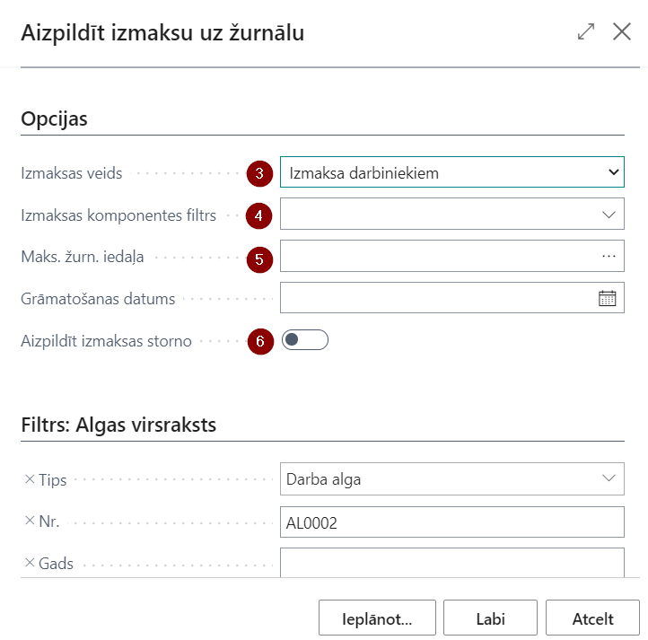
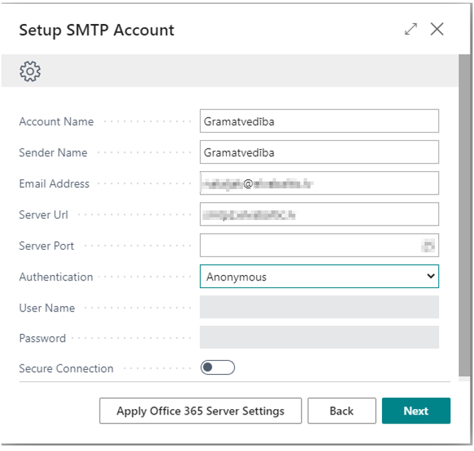

Kā sākt strādāt
Lai sāktu lietot [!include[nav_name](includes/nav_name.md)] [!include[app_payroll_base](includes/app_payroll_base.md)], nav nepieciešams izvēlēties kādu specifisku lomu centru. Funkcionalitāte darbosies no jebkura lomu centra. Tomēr iesakām izmantot LV Alga lomu centru, lai sākuma lapā būtu pieejamas visas saīsnes ērtākai un ātrākai piekļuvei darbā ar algām.
Konfigurācijas pakotnes attiecināšana
[!include[app_payroll_base](includes/app_payroll_base.md)] lietošanai nepieciešamie pamata uzstādījumi un kodi tiek izveidoti, attiecinot konfigurācijas pakotni.
Lai ielādētu konfigurācijas pakotni, klikšķiniet uz pogas Meklēt.
Tad ierakstiet meklēšanas logā Konfigurācijas pakotnes (1) un izvēlieties to no piedāvātās izvēlnes (2).
Konfigurācijas pakotnes loga rīkjoslā klikšķiniet uz pogām Apstrādāt (1) - Importēt pakotni (2) un izvēlieties attiecīgo pakotnes failu no jūsu failu glabātuves. Ar vienu klikšķi iezīmējiet ielādēto pakotni (3) un noklikšķiniet uz pogām Apstrādāt (1) un Attiecināt pakotni (4).
Konfigurācijas pakotnes saturs
Konfigurācijas pakotne ievada sistēmā sekojošu informāciju:
- Valstis/Reģionus
- Ar algām saistīto kontu plānu
- Ar algām saistītos virsgrāmatas uzstādījumus
- Virsgrāmatas žurnālu veidnes un iedaļas
- Mērvienības
- LV Pasta indeksus
- Bankas konta kartiņa algu norēķiniem
- Bankas kontējumu grupa
- Numuru sērijas un to rindas
- SWIFT kodus
- Prombūtņu iemeslu kodus
- Darbinieku statistikas grupas
- Darbinieku kontējuma grupas
- Atsauces uz Darba likuma pantiem
- Cilvēku resursu uzstādījumus
- Algu uzstādījumus
- Algu komponentes un to iestatījumus
- Algu bāzes un to iestatījumus
- Sociālos statusus un to ziņu kodus
- Samazinātās procentu likmes prombūtņu apmaksai
- Kalendārus (4x5, 5DD, 6 DD un SVĒTKU) un svētku dienu izmaiņas tekošajam gadam.
- Algas maksājumu grāmatošanas uzstādījumus
- Algu komponenšu grāmatojumu uzstādījumus
- PFPIS ienākumu un atvieglojumu veidus
Vispārējie sistēmas uzstādījumi
Uzņēmuma informācija uzstādījumos ir obligāti aizpildāmi sekojoši lauki :
- Uzņēmuma nosaukums
- Reģistrācijas Nr.
Banku konti sadaļā ar konfigurācijas pakotni tiks ielādēta bankas konta kartiņa algu maksājumiem. Šajā kartiņā obligāti aizpildāmi sekojoši lauki:
- SWIFT kods
- IBAN
Kontu plāns sadaļā ar konfigurācijas pakotni tiks ielādēti standarta konti, kas nepieciešami algu grāmatojumiem. Nepieciešamības gadījumā šos kontus ieteicams pārnumurēt/ pārsaukt, lai nevajadzētu veikt korekcijas grāmatošanas uzstādījumos.
Dimensijas sadaļā jāizveido dimensijas, kas tiks izmantotas algu uzskaitei.
Uzstādījumi
Lai [!include[nav_name](includes/nav_name.md)] [!include[app_payroll_base](includes/app_payroll_base.md)] varētu sekmīgi funkcionēt atbilstoši jūsu uzņēmuma prasībām, ir pieejami zemāk minētie uzstādījumi.
Pamatuzstādījumi tiek importēti ar konfigurācijas pakotni, tomēr papildus ir jāpārbauda/ jāaizpilda turpmāk aprakstītie uzstādījumu, lai nodrošinātu un verificētu precīzu sistēmas pielāgošanu Jūsu uzņēmuma vajadzībām.
| Uzstādījumu nosaukums | Ar pakotni importēts | Lietotāja izveidots | Lietotājs rediģē | Lietotājam patstāvīgi nav ieteicams rediģēt | Komentārs |
|---|---|---|---|---|---|
| Algas uzstādījumi | Jā | - | Jā | - | Uzstādījumi aprakstīti nodaļā "Algu uzstādījumi". |
| Algas komponentes | Jā | - | (Jā)* | Jā | * Vērtība cilnē "Uzstādījumi" ir jāaktualizē atbilstoši izmaiņām likumdošanā. Uzstādījumi aprakstīti nodaļā "Algas komponentes". |
| Bāzes | Jā | - | (Jā)* | Jā | * Atsevišķos gadījumos lietotājs pats var koriģēt vidējās izpeļņas aprēķinu un ieturējumus par izpildrakstiem. Uzstādījumi aprakstīti nodaļā "Bāzes". |
| Darbinieka kontējuma grupas | Jā | (Jā)* | Jā | - | * Ar konfigurācijas pakotni tiks importētas standarta kontējuma grupas. Nepieciešamības gadījumā tās var pārsaukt, vai pievienot jaunas. Uzstādījumi aprakstīti nodaļā "Darbinieku kontējuma grupas". |
| Darbinieku grāmatošanas uzstādījumi | Jā | (Jā)* | Jā | - | * Ar konfigurācijas pakotni tiks importēti grāmatošanas uzstādījumi, bet papildus darbinieku kontējuma grupu pievienošanas gadījumā, grāmatojumu uzstādījumu rindas ir jāpapildina. Uzstādījumi aprakstīti nodaļā "Darbinieku kontējuma grupas". |
| Algu dimensiju uzstādījumi | - | Jā | Jā | - | Nav obligāta prasība. Uzstādījumi aprakstīti nodaļā "Uzņēmuma uzstādījumi". |
| Darba laika kalendāri | Jā | - | Jā | - | Ja nepieciešams, var papildus izveidot jaunus kalendārus. Cilnē "Kalendāra izmaiņu apakšforma" jāpapildina ar darba dienu datumiem, kad darba laiks ir saīsināts. Uzstādījumi aprakstīti nodaļā "Kalendāri". |
| Svētku dienu kalendāri | Jā | - | Jā | - | Ja nepieciešams, var papildus izveidot kalendārus. Cilnē "Kalendāra izmaiņu apakšforma" jāpapildina ar to svētku dienu datumiem, kas ir atšķirīgi katru gadu. Uzstādījumi aprakstīti nodaļā "Kalendāri". |
| Prombūtne | Jā | - | - | Jā | Prombūtņu iemesla kodi jāizskata, un vajadzības gadījumā, jākoriģē vai jāpapildina konsultējoties ar [!include[comp_name](includes/comp_name.md)] speciālistu. Uzstādījumi aprakstīti nodaļā "Prombūtnes iemesli". |
| Struktūrvienības | - | Jā | Jā | - | Uzstādījumi aprakstīti nodaļā "Darbinieku uzstādījumi". |
| Amati | - | Jā | Jā | - | Uzstādījumi aprakstīti nodaļā "Uzņēmuma uzstādījumi". |
| Algu banku konti | Jā | (Jā)* | Jā | - | * Ar konfigurācijas pakotni tiks importēta kartiņa algu bankas kontam. Ja bankas konti, no kuriem izmaksā algu, ir vairāki, nepieciešams pievienot jaunas bankas kontu kartiņas. Uzstādījumi aprakstīti nodaļā "Algu uzstādījumi". |
Algu uzstādījumi
Ielādējot konfigurācijas pakotni standarta uzstādījumi jau ir aizpildīti, tomēr rekomendējam pārskatīt visus uzstādījumus atbilstoši jūsu uzņēmuma vajadzībām.
Cilne: Visp. info
| Lauka nosaukums | Apraksts |
|---|---|
| Algas valūtas kods | Norāda algas valūtas kodu. Gadījumā, ja algas tiek rēķinātas vietējā valūtā, tad lauks nav jāaizpilda. |
| Automātiski veidot amatu karti | Ja ir atzīme šajā laukā, tad veidojot jaunu darbinieku, automātiski veidosies arī amata karte. |
| Struktūrvienības dimensijas kods | Norāda noklusēto dimensijas kodu. |
| Sūtīt algas lapiņas caur | Norāda vedu, kā tiks sūtītas algu lapiņas – atbilstoši nepieciešamajiem uzstādījumiem. |
| Algas lapiņas nosūtītāja vārds | Norāda vārdu, kas izsūta algu lapiņas. |
| Algas lapiņas nosūtītāja e-pasts | Norāda e-pastu, caur kuru algu lapiņas tiek izsūtītas. |
| Nepārbaudīt attaisnotās promb. 12M vid. izpeļņā | Šī pazīme darbojas, ja ielikta otra pazīme “Nepilniem periodiem lietot tekošo mēnesi vid. izpeļņai”. Ja pazīme nav ielikta, tad tekošais mēnesis netiek paņemts, ja attaisnotās prombūtnes ilgums ir mazāk par 12 mēnešiem, bet gadījumā ja prombūtnes ilgums ir vairāk par 12 mēnešiem, tekošais mēnesis tiks iekļauts vidējās izpeļņas aprēķinā. |
| Nepilniem periodiem lietot tekošo mēnesi vid. izpeļņai | Iespējo, ja vidējo izpeļņu izmanto tekošā mēneša aprēķinā, situācijā, kad darbinieks nav nostrādājis pilnu periodu. |
| Vidējās apmaksas precizitāte | Norāda precizitāti (zīmes aiz komata), ar kādu vidējā izpeļņa tiks izmantota aprēķinos. |
| Vidējās izpeļņas prombūtnes kods | Prombūtnes kods vidējai izpeļņai. |
| Svētku un brīvdienu apmaksas koeficients | Koeficientu izmanto, lai aprēķinātu piemaksu par darba stundām svētku dienās un brīvdienās. |
| Nakts darba apmaksas koeficients | Koeficientu izmanto, lai aprēķinātu piemaksu par nakts darba stundām. |
| Virsstundu apmaksas koeficients | Koeficientu izmanto, lai aprēķinātu piemaksu par nostrādātajām virsstundām. |
| IIN 1. līmeņa ienākumu limits | 1. līmeņa limits. |
| IIN 2. līmeņa ienākumu limits | 2. līmeņa limits darbiniekiem, kuriem A1 sertifikāts. |
| IIN globālais bāzes kods | Tiek izmantots atvieglojumu pārejai uz citu līmeni. |
| Noklusētais kalendārs | Valsts noteiktais kalendārs 5 darba dienu nedēļai. |
| Noklusētais kalendārs 6DDN | Valsts noteiktais kalendārs 6 darba dienu nedēļai. |
| Nepārnest nepiemērotos atviegl. | Norāda, ja nevēlas nepiemērotos atvieglojumus pārnesti uz nākošo mēnešu algu aprēķiniem; Nepiemērotie atvieglojumi tiek pārnesti caur Komponenšu reģistru, kas tiek izveidots aprēķina brīdī. Ja aprēķina brīdī bija pazīme, ka nevajag pārnest nepiemērotos atvieglojumus, tad arī nebūs komponenšu reģistra ieraksta un nākamajā mēnesī tie netiks ņemti vērā. |
| Iespējotas kompensētās svētku dienu stundas | Iespējot risinājumu, ja nepieciešams kompensēt svētku dienas, kas iekrīt darba dienās, ja darbiniekam ir mēnešalga. |
| Kompens. svētku dienu stundas pieņemš./atbrīv | Darbojas kopā tikai ar ieslēgtu funkciju Iespējotas kompensētās svētku dienu stundas. Iespējot, ja nepieciešams kompensēt svētku dienas, kas iekrīt darba dienās, ja darbinieks ir pieņemts vai atbrīvots tekošajā mēnesī. |
| Bērnu kopšanas prombūtnes filtrs | Atbilstošais prombūtnes kods. |
| Prombūtnes korekcijas kods | Kods, ar kādu atrādās Algu pārrēķina rindas Prombūtnes reģistrācijā. |
| Atvaļ. dienu tips | Norāda, kā uzskaita atvaļinājuma dienas - Darba dienās vai Kalendārajās dienās. Paredzēts gadījumos, ja neizmanto atvaļinājuma periodus. |
| Atvaļ. dienu skaits vienā periodā | Norāda atvaļinājuma dienu skaitu, kas pienākas katram darbiniekam vienā periodā. |
| Atvaļ. apmaksājamo dienu skaits vienā periodā | Norāda apmaksājamo atvaļinājuma dienu skaitu, kas pienākas katram darbiniekam vienā periodā. |
| Noklusētais stundu sk. atvaļ./vid.izp. aprēķiniem | Norāda noklusēto vienas dienas stundu skaitu, kurš tiek izmantots kompensācijas aprēķinos, kā arī vid. izpeļņā. |
| Atļaut detalizētu maksājumu grāmatošanu | Atzīme šajā laukā norāda uz to, ka algu maksājums tiks grāmatots detalizēti, nevis grupēts viss vienā summā. Algu maksājumus eksportē uz maksājumu žurnālu un lietotājs var iegrāmatot ar standarta grāmatojumu par katru darbinieku atsevišķi. Tādā gadījumā virsgrāmatā var redzēt, cik katrs darbinieks saņem. Tādēļ ir paredzēta otra grāmatošanas funkcija algām, kura var sagrupēt pa dimensijām un tad iegrāmatot maksājumus. |
| Darba dev. soc. nod. konta tips | Norāda konta tipu, kurā tiks grāmatots aprēķinātais darba devēja sociālais nodoklis. |
| Darba dev. soc. nod. konta Nr. | Norāda kontu, kurā tiks grāmatots aprēķinātais darba devēja sociālais nodoklis. |
| Algas izmaksas datums | Norāda algas izmaksas datumu, kurš parādās algas saraksta virsrakstā un dara devēja ziņojumiem EDS. |
| Avansa izmaksas datums | Norāda avansa izmaksas datumu, kurš parādās avansa saraksta virsrakstā. |
| Bankas veidnes nosaukums | Norāda žurnālu, caur kuru tiks veikti algas maksājumi no bankas konta. |
| Nākamā perioda apmaksas atvilkums | Komponente, kas tiek lietota storno risinājumā. Gadījumā, ja no algas saraksta jau veikta izmaksa, tad tekošā mēneša nākamajā algu sarakstā šī izmaksa tiks uzskaitīta zem noradīta algas komponentes koda. |
| Nelietot sistēmas komp. reģistrus | Norāda, ja algu aprēķinos nevēlas lietot sistēmas radītus Komponenšu reģistra ierakstus. Gadījumā, ja ir nepieciešamas korekcijas, un ielikts ķeksis “Nelietot” , aprēķinot, tiek paradīti paziņojumi par korekcijām, bet reģistrs netiks veidots. |
Cilne: Numerācija
| Lauka nosaukums | Apraksts |
|---|---|
| Algas sarakstu numuri | Norāda algu sarakstu Nr. sēriju. |
| Starpizmaksas sarakstu numuri | Norāda starpizmaksas Nr. sēriju. |
| Avansu sarakstu numuri | Norāda avansu sarakstu Nr. sēriju. |
| Storno sarakstu numuri | Norāda storno sarakstu Nr. sēriju. |
| Darbinieka amatu numuri | Norāda darbinieka amatu Nr. sēriju. |
| Komponenšu reģistru numuri | Norāda algas komponenšu reģistra Nr. sēriju. |
| Sistēmas komponenšu reģistru numuri | Norāda sistēmas komponenšu reģistru Nr. sēriju. |
| Amatu numuri | Norāda sistēmas amatu reģistra Nr. sēriju. |
| Bankas maksājumu numuri | Norāda bankas algu maksājumu Nr. sēriju. |
| PFPIS numuri | Norāda Paziņojuma par fiziskai personai izmaksātām summām dokumentu nr. sēriju. |
Cilne: Komponentes
| Lauka nosaukums | Apraksts |
|---|---|
| Avansa atvilkuma komponentes kods | Norādītā komponente no avansu saraksta ievilksies algu sarakstā kā atvilkums. |
| Starpizmaksu atvilkuma komponentes kods | Norādītā komponente no Starpizmaksu saraksta ievilksies algu sarakstā kā atvilkums. |
| Minimālās algas komponentes kods | Norāda minimālās algas komponenti. |
| Negatīvas izmaksas komponentes kods | Norāda negatīvās izmaksas komponenti. |
Cilne: Atskaites
| Lauka nosaukums | Apraksts |
|---|---|
| Vadītāja Nr. | Norāda personu, kas parakstīsies algu atskaitēs kā vadītājs. |
| Ziņu koda pārbaudes iesl. | Ja ir ieslēgta šī funkcija, tad aizpildot darbinieka kartiņā darbā pieņemšanas vai atbrīvošanas datumus, sistēma piedāvās ievadīt darbinieka ziņu kodu sarakstā Ziņu kodi, no kura tiek iegūta informācija EDS iesniedzama paziņojuma Ziņas par darba ņēmējiem sagatavošanai. |
| Izpildītāja Nr. | Norāda personu, kas parakstīsies algu atskaitēs kā izpildītājs. |
| Iedz. ien. nodoklis aprēķina periodā | Norāda, ka atskaitē “Ziņojums par VSAOIe” tiek uzrādīts tekošā perioda iedzīvotāju ienākuma nodoklis. |
| Neiekļaut iedz. ien. nodokļa precizējumus | Ķeksis strādā tikai gadījumā, ja nav ielikts ķeksis “Iedz. ien. nodoklis aprēķina periodā”. Gadījumā, ja ķeksis “Neiekļaut IIN precizējumus” ir ielikts, VSAOI atskaitē IIN laukā tiks atspoguļota iepriekšējā aprēķina perioda IIN summa. Gadījumā, ja ķeksis “Neiekļaut IIN precizējumus” nav ielikts, tad IIN summā tiks iekļauta iepriekšējā aprēķina perioda IIN summa un tekošā mēneša precizējumi par iepriekšējo periodu. |
| PFPIS noklusētais ienākumu veids | Tiek izmantots PFPIS atskaitē gadījumā, ja darbiniekam netika piemēroti atvieglojumi un netika veikts aprēķins, jo darbiniekam bija bezalgas prombūtne. Šajā gadījumā, piemērojot atvieglojumus, tiem tiks piesaistīts noklusētais ienākuma kods. |
| VSAOI atskaites ienākumu bāzes kods | Norāda ienākumu bāzi VSAOI atskaitei. |
| VSAOI atskaites soc. nod. bāzes kods | Norāda sociālā nodokļa bāzi VSAOI atskaitei. |
| VSAOI atskaites ienākumu nod. bāzes kods | Norāda IIN bāzi VSAOI atskaitei. |
| VSAOI atskaites riska nod. bāzes kods | Norāda riska nodevas bāzi VSAOI atskaitei. |
| VSAOI atskaites pensiju iem. bāzes kods | Norāda pensiju iemaksas bāzi VSAOI atskaitei. |
| VSAOI atskaites solid. nod. bāzes kods | Norāda solid. nodokļa bāzi VSAOI atskaitei. |
| Uzņēmums ir jaunuzņēmums | Pazīme priekš VSAOI atskaites. |
| Profesijas koda maiņas ziņu kods | Ziņu kods atskaitēm par profesijas maiņu |
Algu banku konti
Ar konfigurācijas pakotni tiek importēts bankas konts algu maksājumiem un tā uzstādījumi. Uzstādījumu definēšana ir svarīga, lai no sistēmas varētu veiksmīgi eksportēt algu maksājumus. Uzstādījumus nepieciešamības gadījumā var koriģēt.

| Lauka nosaukums | Apraksts |
|---|---|
| Algu bankas konta Nr. | Tiek izvēlēts algu bankas konts. |
| Nosaukums | Brīvi definējams nosaukums. |
| Saglabājamā faila tips | Visbiežāk lietotais ir SEPA (xml formāts). |
| Faila ceļš | Ja tiek lietots FIDAVISTA tips, tad nav jānorāda. Ja lieto txt tipu, tad ir jānorāda mape, kurā šis fails tiks saglabāts. |
| Atsevišķi maksājumi | Jāatzīmē, ja nepieciešams sūtīt algu maksājumu par katru darbinieku atsevišķi kā atsevišķu dokumentu. |
| Grupēt pēc Darbinieka Nr. | Jāatzīmē, ja tiek veikta izmaksa vienam darbiniekam no vairākiem sarakstiem, tad bankas failā pēc darbinieka nr. tiek veidots viens ieraksts. |
Lietotāja ērtībai, ar konfigurācijas pakotni tiek importēta arī algu izmaksai paredzēta V/G žurnāla iedaļa, ko nepieciešams izmantot sagatavojot algas maksājumus.
Algas Komponentes
Algas aprēķins tiek veidots no dažādām algas komponentēm – ienākumiem, atvilkumiem, atvieglojumiem, nodokļiem, utt. Visas komponentes ir apkopotas sarakstā Algas komponentes.
Tip
Parasti lielākā daļa no šīm komponentēm ir kopīga visiem uzņēmumiem un tiek sagatavotas iepriekš, veidojot jaunu bāzi klientam. Tāpēc nav ieteicams šīs vērtības dzēst un modificēt bez konsultācijas ar [!include[comp_name](includes/comp_name.md)] konsultantiem.
Katras komponentei ir atsevišķa kartiņa, kurā tiek veikti iestatījumi, un ir iespējams piesaistīt dimensijas (1) un apskatīt aprēķinu bāzes, kurās konkrētā komponente tiek izmantota, noklikšķinot uz Sastītās bāzes pēc tipa (2) un Saistītās bāzes pēc koda (3).
Cilne: Visp. info
| Lauka nosaukums | Apraksts |
|---|---|
| Kods | Brīvi definēts kods. |
| Tips | Izvēlas no saraksta atbilstošo tipu. |
| Nosaukums | Brīvi definēts komponentes nosaukums. |
| Prioritāte | Norāda konkrētās komponentes vietu algas aprēķināšanas darbību ķēdē – jo mazāks skaitlis, jo augstāka prioritāte. Tādējādi šī komponente ātrāk tiks iesaistīta algas aprēķinā. Veidojot jaunu algas komponenti, prioritāte iekrīt automātiski, vēlams pašiem bez vajadzības nemainīt. |
| Aprēķina veids | Jāizvēlas, kā komponente tiks rēķināta – Proporcionāli nostrādātām dienām, Proporcionāli nostrādātām stundām, Proporcionāli kalendārām dienām, Stundu, Dienu, Gabaldarbs, Neapliekamais limits (uzkrājošs), Neapliekamais limits (neuzkrājošs), Avanss. |
| Daudzuma tips | Nepieciešams noradīt kādas mērvienības jāizmanto, aprēķinot virsstundas tabelē. |
| Derīgs līdz | Līdz kādam datumam komponente ir spēkā. |
| Derīguma skaidrojums | Brīvi definējams teksts, kurš tiks atspoguļots, aprēķinot algas, kļūdas paziņojumā gadījumā, ja komponente jau nav spēkā. |
| Soc. statusa kods | Norāda pie sociālā nodokļa komponentes atbilstošu sociālā statusa kodu. |
| Noklusētā darbinieka komponente | Atzīme, vai šī komponente aizpildās automātiski, veidojot algas komponentes darbinieka kartiņā. |
| Apgādājamo skaits | Tiek aizpildīts pie atvieglojumu par apgādājamajiem komponentes – ieliek atbilstošo apgādājamo skaitu. |
| Invaliditātes grupa | Tiek aizpildīts pie atvieglojumu par invaliditāti komponentes – aizpilda atbilstošu grupu. |
| 1. globālās dimensijas kods | Ja nepieciešams, norāda 1. globālo dimensiju algas komponentei. |
| 2. globālās dimensijas kods | Ja nepieciešams, norāda 1. globālo dimensiju algas komponentei. |
| Nedrukāt algas lapiņā | Norāda, ka informācija par šo algas komponenti netiks drukāta algas lapiņā. |
Cilne: Papild. info
| Lauka nosaukums | Apraksts |
|---|---|
| Neto summa | Ievieto atzīmi, ja aprēķinā tiek izmantota neto summa. Gadījumā, ja neto komponentei ir reģistrēta summa ar mīnuss zīmi, šī summa tiks uzskatīta par bruto summu. |
| Virsstundu algas komponente | Norāda piesaistīto Virsstundu algas komponenti. |
| Svētku stundu algas komponente | Norāda piesaistīto Svētku stundu algas komponenti. |
| Nakts stundu algas komponente | Norāda, piesaistīto Nakts stundu algas komponenti. |
| Kompensējamo stundu komponentes kods | Norāda algas komponenti, kura tiek izmantota algas aprēķinos ar stundas likmi, kompensējot svētku stundas, kuras iekrīt darbiniekam normālajā darba laikā un šajā dienā darbinieks neveica darbu |
| Gada limita pārsniegtās summas komp. kods | Norāda algas komponentes kodu, kurš tiks izmantots algu aprēķinā gadījumā, ja pārsniegts šīs komponentes limits. |
| Atvieglojumu pieejama summa | Bāze, kura definē atvieglojumu summu dotai komponentei. |
| Nepiemēr. atviegloj. komponentes kods | Norāda algas komponentes kodu, kurš tiks piemērots nepiemēroto atvieglojumu pārnešanai uz nākošo mēnešu algu aprēķiniem. |
| IIN 2. līmeņa komponentes kods | 2. līmeņa IIN bāzes kods. |
| IIN 3. līmeņa komponentes kods | 3. līmeņa IIN bāzes kods. |
| Vienmēr lietot aprēķina periodu | Norāda, ja ir nepieciešams IIN aprēķinam lietot tekošo aprēķina periodu. |
| Dalīt atbilstoši saistītajām komponentēm | Komponentes veidojas no uzstādījumiem (bāzes summām) un dalās atbilstoši komponentēm, kuras ir bāzes summās. |
| Pamatalga | Norāda kura komponente tiek atzīta kā pamatalgas komponente. |
| Svētku dienu apmaksa atvaļ. laikā | ievieto atzīmi pie pamatalgas komponentes, ja vēlas, lai tiktu aprēķināta samaksa par svētku dienām (kuras iekrīt darbinieka darba dienā) atvaļinājuma laikā. Ja atvaļinājuma laikā iekrīt svētku diena, tad sistēma par šīm dienām samazina atvaļinājuma izmantoto dienu skaitu. |
| Svētku dienas brīvdienā vidējā apmaksa | Atzīmējot šo lauku pie pamatalgas komponentes, ja darbinieka brīvdienā “iekrīt” svētku diena, kas pēc valstī noteiktā kalendāra “iekrīt” darba dienā – tad par šo dienu tiek aprēķināta vidējā izpeļņa. Lai par šo dienu aprēķinātu vidējo izpeļņu, darbinieka kartiņā sadaļā Algas komponentes jābūt atzīmei pie Apmaksāt svētku stundas. |
| Netiek grāmatota uz V/G | Norāda, ka atbilstošās komponentes dati netiks grāmatoti uz virsgrāmatu. |
| Algas norēķinu konts | Norāda atbilstošo virsgrāmatas kontu, kurā tiks grāmatoti Norēķini par darba algu. |
| Grāmatošanas grupas konta zīme | Norāda grāmatošanas grupas pusi: debets vai kredīts. |
| Iekļaut nulles summu | Ieslēdz, ja jāveido algas rindu ar 0 summu (nav iespējas ieturēt summu, bet pastāv iespēja, ka lietotājs koriģēs atvilkuma summu). Ģenerēt rindu vajag, lai būtu iespēja pārskaitīt naudu trešajām pusēm. |
Cilne: Grāmatošana

| Lauka nosaukums | Apraksts |
|---|---|
| Darbinieka grām. grupas kods | Izvēlas no saraksta, uz kuru grupu attiecas šī komponente. |
| Konta tips | Iespējamie varianti : virsgrāmatas konts; piegādātājs vai klients. |
| Konta Nr. | Darba algas konta Nr. izvēlas no saraksta (vai piegādātāju/klientu, ja tips ir piegādātājs/klients). |
| DDSN Konta Nr. | Norāda Darba dev.soc.nod. izmaksu Konta Nr. DDSN var grāmatot dažādos izmaksu kontos, kas norādīti katrai darbinieka grāmatošanas grupai. |
Cilne: Uzstādījumi

| Lauka nosaukums | Apraksts |
|---|---|
| No datuma | Norāda, no kura datuma šī vērtība ir spēkā. |
| Vērtība | Norāda vērtību, ja tā ir konstanta. |
| Aprēķināt pēc | Norāda vai ievadītā vērtība būs summa vai % |
| Bāze | Ja ir izvēlēti %, tad norāda bāzi, no kuras (bāzes) summas tiks rēķināti %. |
| Bāzes gada summas limits | Tiek norādīts limits, pēc kura pārsniegšanas netiek veikti aprēķini. |
| Nosaukums | Brīvs aizpildāms lauks. |
Darbinieku grāmatošanas grupas
Darbinieka grāmatošanas grupas tiek izmantotas, ja algas aprēķinā iegūtās summas jāizdala starp dažādiem virsgrāmatas kontiem (piemēram, administrācijas algu izmaksas un strādnieku algu izmaksas). Lai apskatītu visus algu grāmatojumus vienā lapā, Darbinieku grāmatošanas grupas rīkjoslā jānospiež poga Grāmatošanas uzstādījumi
| Lauka nosaukums | Apraksts |
|---|---|
| Kods | Darbinieka grāmatošanas grupas kods. |
| Maksājumu konts | Norāda Virsgrāmatas kontu, kas jālieto, grāmatojot kreditoru parādus darbiniekiem šajā kontējuma grupā. |
Darbinieku grāmatošanas uzstādījumi
Šajā sarakstā apkopoti visu algas komponenšu grāmatošanas uzstādījumi atkarībā no Darbinieka grāmatošanas grupas koda.

| Lauka nosaukums | Apraksts |
|---|---|
| Darbinieka grām. grupas kods | Darbinieka grāmatošanas grupas kods. |
| Algas komponentes kods | Norāda kādai algas komponentei ir atspoguļoti grāmatojumi. |
| Komponentes nosaukums | Algas komponentes nosaukums. |
| Konta tips | Lauku Konta Nr. un DDSN konta Nr. konta tips. |
| Konta Nr. | Konta numurs. |
| DDSN Konta nr. | Darba devēja sociālā nodokļa konta numurs. |
| Algas norēķinu konta Nr. | Korespondējošais konts. Nav rediģējams lauks, tikai informatīva nozīme. |
| Grāmatošanas grupas konta zīme | Konta Nr. un DDSN konta Nr. puse: debets vai kredīts. Nav rediģējams lauks, tikai informatīva nozīme. |
Bāzes
Bāzes ir uzstādījumi, kuri nosaka dažādu algas sastāvdaļu aprēķinu - atvaļinājumu, slimības naudu, kā arī dažu atskaišu aprēķināšanas algoritmus. Šīs summas var definēt pēc vajadzības.
Katrai bāzei ir sava kartiņa un visas bāžu kartiņas ir apkopotas sarakstā Bāzes.
Cilne: Visp. info

| Lauka nosaukums | Apraksts |
|---|---|
| Bāze | Brīvi definēts kods. |
| Nosaukums | Brīvi izvēlēts nosaukums. |
| Saistītās komponentes kods | Šī funkcionalitāte paredzēta paplašinātai datu filtrēšanai. Ja bāzei tiek norādīts Saistītās komponentes kods, tad no algas komponenšu rindām tiek skaitītas tikai rindas, kur komponentes kods vai saistītās komponentes kods sakrīt ar bāzes summas saistītās komponentes kodu. Saistītai komponentei ir ierobežojumi (PFPIS korektai aizpildīšanai), tāpēc obligāti konsultēties ar [!include[comp_name](includes/comp_name.md)] konsultantiem. |
| IIN līmeņa filtrs | Ja ir izvēlēti %, tad norāda bāzi, no kuras (bāzes) summas tiks rēķināti %. |
Cilne: Uzstādījumi

| Tabulas nosaukums | Apraksts |
|---|---|
| + Tips | Norāda komponenšu tipus, kuri tiks pieskaitīti bāzes summas aprēķinā. |
| - Tips | Norāda komponentes tipus, kuri tiks atņemti no bāzes summas. |
| + Kods | Norāda konkrētas komponentes, kuras tiks pieskaitītas bāzes summas aprēķinam. |
| - Kods | Norāda komponentes, kuras tiks atņemtas bāzes summas aprēķinā. |
Papildus katrā tabulā pie komponentes ir iespējams norādīt datumu, no kura un līdz kuram aprēķinā darbojas attiecīgā komponente vai komponentes tips. Šie dati saglabājas vēsturē.
Darba laika kalendāri
Kalendārs ir visu aprēķinu pamatā. Katrai darbinieka amata kartei ir jāpievieno darba laika kalendāra kods. Kalendārs tiek izmantots darba dienu un stundu aprēķinos, kā arī, lai aprēķinātu plānotās darba dienas un stundas mēnesī, ko izmanto prombūtņu aprēķinos.
Katram kalendāram ir sava kartiņa. Darba laiku kalendāru kartiņas apkopotas sarakstā Darba laika kalendāri. Ar konfigurācijas pakotni tiek importēti vairāki standarta kalendāru veidi. Lietotājs var izveidot papildus kalendārus atkarībā no uzņēmuma vajadzībām. Darba dienām, kurām atšķiras darba stundas (piemēram, pirmssvētku dienas) nepieciešams kalendāros papildināt manuāli ik gadu.
Veidojot jaunu darba laika kalendāra kartiņu, iestatījumiem pieejami sekojoši lauki:
Cilne: Visp. info
| Lauka nosaukums | Apraksts |
|---|---|
| Kods | Brīvi definēts kods. |
| Nosaukums | Brīvi izvēlēts nosaukums. |
| Svētku kalendāra kods | Svētku kalendārs, kas ir piesaistīts konkrētam darba laika kalendāram. |
| Svētku kalendārs | Atzīme, ka šis kalendārs ir svētku kalendārs (tikai svētku kalendāriem). |
| Darbs arī brīvdienās | Atzīmē, ka darbinieki strādā arī brīvdienās. |
| Cikla kalendārs | Atzīme, ja darba laika kalendārs ir veidots kā cikla kalendārs. |
| Cikla sākuma datums | Nodefinē cikla kalendāra pirmo dienu. |
Cilne: Kalendāra ieraksti
Kalendāra ierakstos tiek atspoguļota informācija par katru dienu, ņemot vērā piesaistīto svētku dienu kalendāru. Ja pamata kalendāram virsrakstā ir norādīts Svētku kalendārs, tad visas svētku dienas attiecas arī uz šo kalendāru. Īpašas izmaiņas var izdarīt katrā kalendārā atsevišķi - pārcelt konkrētas darba dienas, saīsināt pirmssvētku dienu stundas, norādot konkrētus datumus. Gadījumā, ja vajadzētu kompensēt svētku dienu, kura iekrīt normālajā darba nedēļā, šo informāciju var reģistrēt cilnē Kalendāra izmaiņu apakšforma.
Cilne: Kalendāra izmaiņu apakšforma
| Lauka nosaukums | Apraksts |
|---|---|
| Periodiskums | Gada periods (parasti izmanto svētku kalendāriem), Nedēļas periods vai Cikls. |
| Datums | Ja nepieciešams, norāda konkrētu datumu (parasti izmanto svētku kalendāriem). |
| Diena | Norāda nedēļas dienas nosaukumu. |
| Cikla kārtas numurs | Ja periodiskums ir Cikls, tad norāda cikla kārtas Nr. |
| Nosaukums | Brīvi izvēlēts apraksts. |
| Brīvdiena | Atzīme, vai konkrētā diena ir brīvdiena. |
| Svētku diena | Atzīme, vai konkrētā diena ir svētku diena. |
Gadījumā, ja svētku diena pārcelta uz citu dienu (piemēram, 18. novembris vai 4. maijs), tad šai informācijai jābūt ievadītai darba laika kalendārā ar tipu Brīvdiena un kompensējamām stundām.
Cilne: Kalendāra gadu apakšforma

Tiek noradīts gads un vidējais stundu skaits mēnesī gadījumam, ja darbiniekam ir summētais darba laiks un pamatalga proporcionāli stundām, tiek ņemts vērā vidējais stundu skaits mēnesī stundas likmes aprēķinam. Šī likme tiek izmantota nakts stundām, virsstundām, svētku stundām, svētku dienu/stundu kompensācijām.
Svētku dienu kalendāri
Sistēmas standarta pakotnē ir izveidots standarta svētku kalendārs ar jau iestatītām svētku dienām, kas atkārtojas katru gadu vienā un tai pašā datumā (piem.: Ziemassvētki, Jāņi, utt.). Svētku dienas, kuras neatkārtojas vienā un tai pašā datumā (piem.: Lieldienas, Mātes diena, Vasarsvētki, kā arī, pārceltās svētku dienas), ir jāpapildina manuāli katru gadu.
Cilne: Visp. info
Tiek aizpildīti tikai lauki Kods un Nosaukums, kā arī ielikta pazīme Svētku kalendārs . Pārējie šīs cilnes lauki ir neaktīvi, un sistēma tos aizpilda pati.

Cilne: Kalendāra ieraksti

Cilne: Kalendāra izmaiņu apakšforma
Ja svētku dienas atkārtojas ik gadu vienos un tajos pašos datumos, tad periodiskumu izvēlas Gada periods un saliek attiecīgos uzstādījumus. Ja svētku dienas neatkārtojas ik gadu vienos un tajos pašos datumos, tad lauku periodiskums atstāj tukšu.
Prombūtnes iemesli
Lai reģistrētu prombūtni, nepieciešams Neierašanās iemesla kods. Visi neierašanās iemeslu kodi tiek sākotnēji importēti sistēmā ar konfigurācijas pakotnes starpniecību un tie ir apkopoti sarakstā Prombūtnes iemesli. Koda kartiņu var atvērt ieklikšķinot nepieciešamā koda rindiņā un nospiežot rīkjoslā uz pogām Darbības - Jauns dokuments - Karte.
Prombūtņu iemesla kodus un to uzstādījumus ieteicams patstāvīgi nemainīt.

Cilne Visp. info
| Lauka nosaukums | Apraksts |
|---|---|
| Kods | Brīvi definēts prombūtnes kods. |
| Apraksts | Prombūtnes apraksts. |
| Mērvienības kods | Izvēlas no mērvienību klasifikatora. |
| Kopā neierašanās (bāze) | Sistēma uzrāda, cik kopā ir reģistrēta šī prombūtne. Ņemot vērā ka tas ir standarta Microsoft lauks, kurš nav uzturēts, vienmēr rāda nulli. |
Cilne Algas
| Lauka nosaukums | Apraksts |
|---|---|
| Neattaisnota prombūtne | Neattaisnotas prombūtnes pazīme. |
| Algas aprēķina veids | Izvēlas no saraksta, kādā veidā tiek aprēķināta prombūtne: 1. Vidējā apmaksa – aprēķina periodu vispirms ņem iepriekšējos 6 mēn., ja nav, tad iepriekšējos 12 mēn. Ja arī nav, tad programma pārbauda Algu uzstādījumos, vai ir atzīme laukā Nepilniem mēnešiem lietot tekošo mēnesi vid. izpeļņai. Ja šajā laukā nav atzīmes, tad rēķina vidējo no minimālās algas; 2. Saglabāta alga (Cita komponente) – par izvēlēto periodu saglabās aprēķināto pamatalgu, summu izdalot citā algas komponentē; 3. Saglabāta alga – par izvēlēto periodu nekas nemainās pamatalgas aprēķinā (piem.: attaisnota prombūtne); 4. Iepr. apmaksa – izmaksā pamatalgu Starpizmaksās par izvēlēto periodu (atvaļinājums uz priekšu); 5. Bez algas – par izvēlēto periodu neaprēķina algu (piem.: bezalgas atvaļinājums, neattaisnota neierašanās); 6. Bez atvieglojumiem – Neaprēķina algu un atvieglojumus (piem.: B lapas); 7. Tukšums – ignorē algu aprēķinos. |
| Algas komponentes kods | Norāda atbilstošo algas komponenti. |
| Nākamā perioda algas komp. kods | Norāda komponenti, ja samaksa par nākamo periodu tiek izdalīta citā komponentē. |
| Kalendāro dienu ierobežojums | Norāda prombūtnes iemesla dienu skaitu (piem. slimības lapas, komandējumi), lai brīdinātu par ierobežojumu pārsniegšanu. |
| Samazināta likme | Norāda samazinātās likmes pa dienām, (piem.: kādā veidā tiek apmaksātas slimības lapas). Klikšķiniet uz lauka linku, lai iestatītu.  |
| Piespiedu kalendāra kods | Izvēlas noklusēto kalendāru, pēc kura tiks veikts aprēķins konkrētai prombūtnei. |
| Piespiedu kalendāra kods 6DDN | Izvēlas noklusēto kalendāru, pēc kura tiks veikts aprēķins konkrētai prombūtnei pēc sešu darba dienu kalendāra. |
| Lietot kalendārās dienas | Norāda prombūtnes aprēķina veidu pa dienām (periods): - Darba diena; - Kalendārā diena; - Ar roku - dienu skaits nav atkarīgs no perioda. |
| Atvieglojumi aprēķina periodā | Atzīme laukā norāda, ka atvieglojumi būs šajā mēnesī. Ja atzīmes nav, tad tie tiks pārnesti arī uz priekšu. (piem.: gari atvaļinājumi skolotājiem). |
| Iekļaut faktiskajā darba laikā | Ja ir atzīme šajā laukā, tad tiek uztvertas kā faktiski nostrādātās dienas (piem.: komandējums). |
| Aprēķina prioritāte | Norāda prombūtnes iemesla kārtas skaitli algas aprēķināšanas darbību ķēdē - jo mazāks skaitlis, jo augstāka prioritāte. Prioritāti var norādīt gan algas komponentēm, gan arī prombūtnes iemesliem. Ja algas komponente nāk no prombūtnes ieraksta (atval. komp.), tad prioritāte tiek ņemta no prombūtnes iemesla. |
| Vidējā izpeļņa pa stundām | Pastāv iespēja izvēlēties: tukšums, tikai SDL ( summētajam darba laikam), visiem.. |
| Grāmatot uz nākamajiem periodiem | Ķeksis tiek ielikts gadījumā, ja pārejošās prombūtnes nākamā perioda daļa tiek grāmatota uz nākamā perioda izdevumiem. |
| G/U Kods | Norāda brīvi izvēlētu kodu, kas būs apzīmējums šim prombūtnes veidam tabeles izdrukā. |
| Krāsa tabeles izdrukā | Izvēlas krāsu, ar kādu marķētas prombūtnes dienas tabeles izdrukā. |
| Brīvdiena saglabājot darba algu | Tiek izmantota, ja darbiniekam iedota brīvdiena, kura jāapmaksā pēc principa “saglabājot darba algu”, bet neiekļaut faktiskajā laikā (piem.: donora dienas) Ja iespējots, tad lauka Algas aprēķina veids vērtībai ir jābūt Vidējā apmaksa. |
| Nekompensēt svētku dienu stundas | Iespējo, ja vēlas, lai prombūtnes periodā iekļautās svētku dienas, kas iekrīt darba dienā, netiktu kompensēšanai. |
| Neapmaksāt kompensējamās svētku dienu stundas | Iespējo, ja vēlas, lai prombūtnes periodā iekļautās svētku dienas netiktu pievienotas pie apmaksājamām dienām kopā ar pamatalgu. |
| Prombūtnes sāk. ziņu kods | Norāda ziņu kodu, kāds tiks atspoguļots atskaitē Ziņas par darba ņēmējiem saistībā ar prombūtnes sākumu. Darbinieka ziņu kods sistēmā aizpildīsies pēc prombūtnes sākuma datuma ievadīšanas. |
| Darba atsākšanas ziņu kods | Norāda ziņu kodu, kāds tiks atspoguļots atskaitē Ziņas par darba ņēmējiem saistībā ar prombūtnes beigām. Darbinieka ziņu kods sistēmā aizpildīsies pēc prombūtnes beigu datuma ievadīšanas. |
Cilne Atvaļinājumi
| Lauka nosaukums | Apraksts |
|---|---|
| Ietekme uz atvaļinājumu | Norāda prombūtnes ietekmi uz ikgadējo atvaļinājumu atlikumu. |
| Atvaļinājuma kompensācija | Atvaļinājuma kompensācijas pazīme. Pielietota Atvaļinājuma kompensācijas koda kartiņā. |
Uzņēmuma struktūra un amati
Lai varētu sākt ērti, bez aizķeršanās vadīt datus darbinieka kartiņā, ir ieteicams sākotnēji veikt zemāk uzskaitītos uzstādījumus, kas būs nepieciešami darbinieku kartiņas lauku aizpildīšanai:
- jāizveido uzņēmuma struktūrvienības;
- jāizveido darbinieku amatu saraksts;
- jānosaka algu dimensijas;
- jāuzstāda darba laika kalendāri, saskaņā ar ko strādās darbinieki
Struktūrvienības
Sistēmā iespējams uzturēt strukturētu informāciju par uzņēmuma struktūrvienībām. Informācija būs gan aktuālā, gan arī vēsturiskā, jo struktūrvienības sistēmā netiek dzēstas, bet gan slēgtas.
Lai nodrošinātu struktūrvienību hierarhiju, tiek kombinētas kārtošanas un atkāpju metodes. Tātad viena struktūrvienība ir pakļauta otrai struktūrvienībai, ja tā atrodas pēc galvenās struktūrvienības un ir ar vienu līmeni lielāku atkāpi. Atkarībā no struktūrvienību atkāpju dziļuma un struktūrvienību skaita, sastāda struktūrvienības kodu. Struktūrvienības atkāpes tiek veidotas ar funkciju Piešķirt pakļautību (1), Samazināt atkāpi (3) un Palielināt atkāpi (4) palīdzību Struktūrvienības rīkjoslā.
Struktūrvienībām var piesaistīt dimensijas, klikšķinot uz pogas Dimensijas (2).
| Lauka nosaukums | Apraksts |
|---|---|
| Kods | Struktūrvienības kods, ko definē lietotājs. |
| Nosaukums | Struktūrvienības nosaukums. |
| Adrese | Adrese, kur atdodas struktūrvienība. |
| Izveidošanas datums | Datums, kad struktūrvienība ir izveidota. |
| Slēgšanas datums | Datums, kad struktūrvienība ir slēgta. |
| Pakļautība hierarhijā kods | Struktūrvienības kods, kurai struktūrvienība ir pakļauta. |
| Vadītāja amata kods | Atbilstošais vadītājā amata kods no saraksta Amati. |
| Dimensijas vērtības kods | Struktūrvienības dimensijas vērtības kods no standarta algu dimensiju klasifikatora. |
Amati
Visi uzņēmumā lietotie amati tiek apkopoti sarakstā Amati. Katram amatam ir jāizveido atsevišķa Amata kartiņa.
Ja sistēmā tiek labota informācija par profesijas kodu un struktūrvienības kodu, tad, lai šīs izmaiņas parādītos arī darbinieka kartiņā, amata kartē ir jāaktivizē funkcija Atjaunot darbinieku amatus, klikšķinot uz Apstrādāt (1) un Atjaunot darbinieku amatus (2).
Amata kartiņai var piesaistīt dimensijas, klikšķinot uz Saistītās (3) un izvēloties funkciju Dimensijas (4).
| Lauka nosaukums | Apraksts |
|---|---|
| Kods | Jaunās amata vietas kods. |
| Nosaukums | Amata nosaukums. |
| Profesijas kods | Kods no Darbinieku statistikas grupas. |
| Struktūrvienības kods | Kods no Struktūrvienības saraksta. |
| Struktūrvienības apraksts | Apraksts no Struktūrvienības saraksta. |
| Kopējās slodzes | Slodzes, kas ir paredzētas šim amatam kopā. |
| Patreizējās slodzes | Cik amata slodzes uzņēmumā jau ir aizņemtas. |
| Patreizējais darbinieku skaits | Darbinieku skaits, kas ir nodarbināti konkrētā amatā. |
| Vakantās slodzes | Cik slodzes vēl ir vakantas šim amatam. |
| Izveidošanas datums | Amata izveidošanas datums. |
| Slēgšanas datums | Amata slēgšanas datums. |
| Amata alga | Informatīvs lauks. |
| Darba laiks nav nosakāms | Atzīmē, ja amatam darba laiks nav nosakāms un tiek pakārtots uzņēmuma vajadzībām. |
Algu dimensiju uzstādījumi
Šīs funkcionalitātes izmantošana nav obligāta sekmīgas sistēmas darbības nodrošināšanai.
Algu dimensiju uzstādījumos norāda tās dimensijas, kuras tiks izmantotas algu aprēķinus. Pārējās sistēmā pieejamās dimensijas tiks ignorētas.

| Lauka nosaukums | Apraksts |
|---|---|
| Dimensijas kods | Izvēlas dimensiju no saraksta, kura tiks lietota algas aprēķinos. |
| Vērtības izcelsme | Norāda līmeni, no kurienes tiks ņemta dimensijas vērtība: a) Avots – Prombūtnes reģistrācija, Darba algas komponentes, Algas komponenšu reģistrs; b) Algas komponente – Norādītais dimensijas kods tiek ņemts no algas komponentes; c) Darbinieka amats – Norādītais dimensijas kods tiek ņemts no Darbinieku amata; d) Darbinieks – Augstākais līmenis, norādītais dimensijas kods tiek ņemts no darbinieka kartes. |
| Nelietot hierarhiju | Ja nav atzīme šajā laukā, tad norādītais dimensijas kods tiek meklēts augstākos līmeņos. Ja ir atzīme, tad tikai izvēlētajā līmenī. |
| Pieļaut tukšu vērtību | Pārbauda, vai pēc iepriekš norādītajiem uzstādījumiem dimensijas vērtība nav tukša vērtība. Ja ir atzīme šajā laukā, tad programma nedod kļūdas paziņojumu, ja nevienā no līmeņiem (konkrētā līmenī, ja ir atzīme laukā nelietot hierarhiju) dimensija nav atrasta. |
Sistēma piedāvā iespēju pievienot pie struktūrvienības, amata n-tās dimensijas. Ja pie struktūrvienības norāda dimensiju vērtības un pie attiecīgās struktūrvienības amata norāda vēl citu dimensiju vērtības, tad pie darbinieka amata parāda visas (gan tās, kas bija norādītas pie struktūrvienības, gan tās, kas bija norādītas pie amata).
Tip
Nav ieteicams norādīt vienas un tās pašas dimensijas, bet ar atšķirīgām vērtībām gan pie struktūrvienības, gan amata.
Darbinieku dati
Lai pieņemtu darbā jaunu darbinieku ir jāizveido jauna darbinieka kartiņa. Katram darbiniekam ir sava atsevišķa kartiņa, kur ir jāievada visa pieejamā informācija, kas attiecas uz konkrēto darbinieku. Darbinieka kartiņā ir apkopo visa informācija, kas nepieciešama uzskaitei, aprēķiniem un atskaitēm.
Visas darbinieku kartiņas ir apkopotas sarakstā Darbinieki.
Lietotāju ērtībām darbinieku ievadīšanai sistēmā ir pieejama arī darbinieka kartiņas kopēšanas funkcija (Darbinieka kartiņas rīkjoslā Naviģēt-Papildus inf. izveidošana-Kopēt darbinieku), ko ir ērti izmantot, ja darbinieks pēc atbrīvošanas ir atkārtoti uzsācis darbu uzņēmumā. Tomēr, lai izvairītos no iespējamām kļūdām (piemēram, vidējās izpeļņas aprēķinā, paziņojumā par fiziskajām personām izmaksātajām summām), ir ieteicams veidot jaunu darbinieka kartiņu.
Darbinieku kartiņa
Obligāti aizpildāmie lauki apraksta tabulu kolonnā Lauka tips ir atzīmēti ar izsaukuma zīmi "!".
Cilne: Visp. info

| Lauka nosaukums | Lauka tips | Apraksts |
|---|---|---|
| Nr | ! | Aizpildās automātiski. |
| Vārds | ! | Darbinieka vārds. |
| Otrais vārds/Iniciāļi | Darbinieka otrs vārds vai iniciāļi. | |
| Uzvārds | ! | Darbinieka uzvārds. |
| Meklēšanas nosacījumi | Aizpildās automātiski. | |
| Dzimums | ! | Darbinieka dzimums. |
| Uzņēmuma tālruņa Nr. | Brīvi aizpildāms lauks informācijai. | |
| Uzņēmuma e-pasts | Brīvi aizpildāms lauks informācijai. | |
| Pēdējās modifikācijas datums | Informatīvs lauks, paredzēts darbiniekam izmaksāto summu kontrolei. | |
| Bloķēts privātuma dēļ | Tiek aizpildīts gadījumā, ja darbinieks uzrakstījis iesniegumu bloķēt informāciju par viņu. Tādā gadījumā šis darbinieks netiek atspoguļots atbilstošos sarakstos. | |
| Izmaksu summa | Informatīvs lauks, paredzēts darbiniekam izmaksāto summu kontrolei. | |
| Izmaksu summa pirms storno | Informatīvs lauks. | |
| Maksājumu summa | Informatīvs lauks, paredzēts darbiniekam izmaksāto summu kontrolei. | |
| Atlikusī maksājumu summa | Informatīvs lauks, paredzēts darbiniekam izmaksāto summu kontrolei. | |
| Nav atļauts apsveikt | Tiek aizpildīts gadījumā, ja darbinieks pēc GDPR negribētu afišēt savu dzimšanas dienu. |
Cilne: Adrese un kontaktinformācija
Šajā cilnē norāda adreses, telefona numurus, e-pasta adreses un alternatīvās adreses. Alternatīvo adrešu skaits var būt neierobežots. Lauki ir aizpildāmi pēc vajadzības. Ja lietotājs vēlas, lai darbiniekam tiek sūtītas algu lapiņas uz e-pasta adresi, tad lauks Privātais e-pasts ir jāaizpilda obligāti.

Katram darbiniekam var ievadīt neierobežotu alternatīvo adrešu skaitu. Šim nolūkam sarakstā Alternatīvās adreses ir jāievada kods un tam atbilstošā kontaktinformācija. Tālāk kādu no Alternatīvās adreses kodiem var ievadīt šim nolūkam paredzētajā laukā darbinieka kartiņas cilnē Adrese un kontakts.
Cilne: Administrēšana

| Lauka nosaukums | Lauka tips | Apraksts |
|---|---|---|
| Darbā pieņemšanas datums | ! | Ja Algu uzstādījumu cilnē Atskaites ir ieslēgta funkcija Ziņu koda pārbaudes iesl., tad aizpildot šo lauku, sistēma piedāvās ievadīt darbinieka ziņu kodu EDS iesniedzamam paziņojumam Ziņas par darba ņēmējiem. Atkārtoti šo logu var atvērt klikšķinot rīkjoslā uz pogām Naviģēt - Papaildus inform. algām - Ziņu kodi |
| Statuss | ! | Aktīvs, Neaktīvs, Izbeigts. Pēc noklusējuma aizpildās Aktīvs. |
| Neaktivitātes datums | Plānotais atbrīvošanas datums, ja darbinieks ir pieņemts darbā uz noteiktu laiku. | |
| Neaktivitātes iemesla kods | Darbinieka neaktivitātes iemesla kods. | |
| Līguma izbeigšanas datums | ! | Obligāts lauks atbrīvojot darbinieku. |
| Izbeigšanas iemesla kods | Norāda darba izbeigšanas kodu pārtraucot darba attiecības. | |
| Darba līguma kods | Norāda ar darbinieku saistīto darba līguma kodu. | |
| Resursa Nr. | Norāda darbinieka resursa numuru. | |
| Pārdevēja/iepircēja kods | Norāda kodu, kas piešķirts darbiniekam, kas ir pārdevējs vai iepircējs. |
Cilne: Personas dati

| Lauka nosaukums | Lauka tips | Apraksts |
|---|---|---|
| Dzimšanas datums | ! | Norāda darbinieka dzimšanas datumu. |
| Personas kods | ! | Nerezidenta gadījumā LR piešķirtais NMR kods. Gadījumā, ja personas kods sākas ar 32, dzimšanas datums netiks aizpildīts. |
| Iepriekšējais personas kods | ! | Gadījumā, ja laukā Personas kods ir ievadīts jauns personas kods, iepriekšējais personas kods tiks automātiski pārkopēts laukā Iepriekšējais personas kods. Jāpievērš uzmanība, lai iepriekšējais personas kods būtu pārkopēts laukā Iepriekšējais personas kods, laukam Iepriekšējais personas kods jābūt tukšam. |
| Apvienības kods | Ja darbinieks ir iestājies kādā apvienībā. | |
| Apvienības dalībnieka Nr. | Obligāts lauks atbrīvojot darbinieku. | |
| Rezidence | ! | Pēc noklusējuma aizpildās Rezidents. Gadījumā ja ir izvēlēta opcija Nerezidents, tad darba devēja ziņojumā nerezidentiem netiks aizpildīts IIN. |
| Nerezidenta ID kods | Norāda nerezidentam piešķirto personas identifikācijas kodu. | |
| Darba atļaujas termiņš | Norāda datumu, līdz kuram derīga ir darba atļauja. |
Cilne: Maksājumi

| Lauka nosaukums | Lauka tips | Apraksts |
|---|---|---|
| Darbinieka kontējuma grupa | ! | Izvēlas darbinieka kontējuma grupu no saraksta. |
| Attiecināšanas metode | Norādīt veidu, kā piemērot maksājumus šim darbiniekam. | |
| Bankas nodaļas kods | Norāda darbinieka algas konta bankas filiāles nosaukumu. | |
| Bankas konta Nr. | Norāda darbinieka bankas kontu, uz kuru jāveic algas maksājums. | |
| IBAN | ! | Darbinieka bankas konta starptautiskais kods, uz kuru ir jāveic algas maksājums.** |
| SWIFT kods | ! | Bankas SWIFT kods. |
Cilne: Algas

| Lauka nosaukums | Lauka tips | Apraksts |
|---|---|---|
| Soc. statusa kods | ! | Izvēlas no saraksta darbinieka statusa kodu. |
| Uzņēmuma līgums | Norāda, vai darbinieks strādā pamatojoties uz uzņēmuma līguma. | |
| Autoratlīdzības | Norāda, vai darbinieks saņem autoratlīdzību. | |
| Pārbaudes laika periods | Norāda pārbaudes laika ilgumu, piemēram, 3M. | |
| Pārbaudes laika beigas | Vērtība ielasās automātiski, vadoties pēc darbā pieņemšanas datuma un norādītā pārbaudes laika perioda ilguma. | |
| Uzkr.(-)/izņ.(+) atvaļ. dienas | Šis lauks tiek izmantots uzkrātā atvaļinājuma dienu atlikuma ievadei. | |
| Vidējā samaksa par stundu | Ja aprēķins ir veicams ņemot vērā stundas. | |
| Nerezidenta ienākumu veids | Norāda, ja darbinieks ir nerezidents. |
Cilne: Darbinieka amati
Būtiska darbinieka kartiņas daļa!
Šajā cilnē tiek norādīti tādi aprēķinam vajadzīgie parametri kā darba laika kalendārs, amatā pieņemšanas datums, amata nosaukums.
Lai darbiniekam piešķirtu amatu, klikšķiniet uz pogām Saistītās (1) - Papildus inf. izveidošana (2) - Izveidot jaunu darbinieka amatu (3).
Atvērsies jauns logs Darbinieka amata karte.

| Lauka nosaukums | Lauka tips | Apraksts |
|---|---|---|
| Nr. | Darbinieka amata numerācija nepieciešama, lai programma varētu pareizi aprēķināt algu gadījumā, ja darbiniekam mainījies amats. Amata maiņas gadījumā jaunajam amatam automātiski tiek piešķirts jauns Darbinieka amata numurs. | |
| Darbinieka Nr. | Izvēlas darbinieku no saraksta. | |
| No datuma | Amats stājas spēkā ar noteiktu datumu, kuru norāda laukā Spēkā no. Pirmajam darbinieka amatam šis lauks pēc noklusējuma tiek aizpildīts ar darbā pieņemšanas datumu. | |
| Līdz datumam | Norāda, ja amatam ir zināms beigu termiņš. | |
| Plānotais spēkā līdz datums | Norāda, ja amatam ir plānots beigu termiņš. | |
| Amata vietas kods | ! | Izvēlas darbinieka amatu no amatu saraksta. |
| Amata nosaukums | ! | Nosaukums ielasās automātiski no izvēlētās amata kartiņas. |
| Struktūrvienības kods | ! | Izvēlas darbinieka struktūrvienību. |
| Galvenais amats | Ja darbiniekam ir vairāki amati, tad starp visiem amatiem ir jānorāda galvenais. | |
| Neiekļaut algu sarakstā | Darbinieka atlaišanas gadījumā šis lauks tiek atzīmēts automātiski, tiklīdz ir izveidots pēdējais algu saraksts. | |
| Algas tips | ! | Norāda darbinieka darba algas aprēķina tipu (normālais vai summētais darba laiks). |
| Slodze | Paredzēts statistisko atskaišu veidošanai. | |
| Kalendāra kods | ! | Izvēlas no darba laika kalendāru saraksta. Kalendārs ir visu aprēķinu pamats. |
| Kalendāra nosaukums | Kalendāra kods ielasās automātiski no Kalendāru saraksta. | |
| Cikla kalendārs | Parādās informācija par cikla kalendāru, ja tāds tika izvēlēts Kalendāra kods lauciņā. | |
| Nelietot noklus. atvaļ. kal | Nelietot noklusēto atvaļinājuma kalendāru. | |
| Profesijas kods | Tiek izvēlēts atbilstošs kods no profesijas kodu klasifikatora. | |
| Darba laiks nav nosakāms | Norāda, ja par darba izpildi nav iespējams noteikt faktiski nostrādātās stundas. | |
| 1. globālās dimensijas kods | Ja nepieciešams, norāda 1. globālo dimensiju. | |
| 2. globālās dimensijas kods | Ja nepieciešams, norāda 2. globālo dimensiju. |
Nepieciešamības gadījumā Darbinieku amata kartiņā ir iespējams arī piešķirt dimensijas apskatītajam darbinieka amatam.
Algas komponentes
Darba algas komponentēs norāda nodokļu, atvieglojumu un atvilkumu komponentes, kuras jāiekļauj darbinieka darba algas aprēķinā.
Darbinieka algas komponentes var apskatīt klikšķinot rīkjoslā uz pogām Apstrādāt - Darbinieka algas komponentes.
Izveidojot jaunu darbinieka kartiņu, pirmo reizi algu komponentes ir jāģenerē automātiski. Lai to izdarītu, rīkjoslā jānoklikšķina uz pogām Saistītās (1) - Papildus inf. izveidošana (2) - Izveidot noklusētās darbinieka algas komponentes (3).
Algas komponentes ir vieta, kur ir jānorāda pamatalgas komponente, kā arī citas regulāru papildus ienākumu komponentes (piemaksas, prēmijas, bonusus u.tml., kas ir konstantas summas katru mēnesi ilgstošu laika periodu). Izmaksājamo avansa summu norāda avansa komponentē. Nepieciešamības gadījumā rindas papildina ar informāciju par atvieglojumiem - Apgādājamie, Invaliditāte, Represētais.
Tip
Gadījumā, ja darbinieks iesniedzis nodokļu grāmatiņu darba devējam, jāaizpilda katalogs Saistīta informācija, ko var atrast rīkjoslā klikšķinot uz Naviģēt -Papildus info algu aprēķinam.
Komponentēs norāda arī informāciju par ilgstošiem Atvilkumiem (izpildraksti, alimenti, par auto lietošanu, u.tml.). Atvilkumus darbinieku kartiņā atzīmē tikai tajos gadījumos, kad tie ir konstantas summas, kas atkārtojas katru mēnesi. Vienreizēji ieturami atvilkumi reģistrējami Komponenšu reģistrs.
Izpildrakstu apstrāde
Izpildraksts ir jāreģistrē darbinieka kartes sadaļā Algas komponentes

Konkrētajā piemērā ir ieturēti 20 % no bāzes ALIM (alga pēc nodokļu ieturēšanas) izmantojot algas komponenti Nr.740, kur minimālais ieturējums 250 EUR mēnesī, un par iepriekšējiem periodiem ir veikti ieturējumi 2000 EUR apmērā. Ieturējumam limita nav.
Lai iestatītu izpildraksta ieturējumu, jāaizpilda sekojoši lauki:
| Lauka nosaukums | Apraksts |
|---|---|
| Kods | Izvēlēties algas komponenti. Atkarībā no algas komponentes uzstādījumiem tiek aprēķināta ieturējuma summa. |
| No datuma/ Līdz datumam | Ja zināms, norādiet datumus, kādā periodā jāveic ieturējums. |
| Vērtība | Aizpilda gadījumā, ja ir zināma konkrēta summa, kas tiks ieturēta katru mēnesi. |
| Kopējais limits | Norāda kopējo parāda summu pēc izpildraksta. |
| Aprēķinātā summa | Informatīvs lauks. Sistēma šeit atspoguļo kopējo ieturēto summa šim konkrētajam izpildrakstam (no visiem algu sarakstiem kopējā summa). |
| Mēneša limits | Norāda mēneša minimālo limitu. |
| Izmaksas minimālais limits | Norāda darbinieka algas izmaksas minimālo limitu. Šajā gadījumā obligāti jābūt aizpildītai izmaksas bāzei. |
| Izmaksas limita bāze | Norāda limita bāzi, ja ir norādīts izmaksas minimālais limits. |
Iespējamie konfigurācijas varianti:
- Tiek ieturēti 30% no darbiniekam izmaksājamās, bet ne vairāk kā 350 EUR mēnesī. Kopējā ieturamā summa 350 EUR. Parādīts, ka no darbinieka ir jau ieturēta maksimālā summa 350.00 EUR.

- Tiek ieturēti 20%, pie nosacījuma, ka ir jānodrošina darbinieka algas izmaksas summa vismaz 370 EUR mēnesī. Kopējā ieturamā summa 350 EUR. Parādīts, ka no darbinieka ir ieturēts 36.00 EUR.

Tip
Sistēma nenodrošina abus variantus vienlaicīgi - kad tiek lietots Mēneša limits un Izmaksas minimālais limits!
Darbinieka papildus informācija
Darbinieka kartiņā var ievadīt dažādu papildinformāciju, kas attiecas uz konkrēto darbinieku:
- Kvalifikācijas
- Konfidenciāla informācija
- Alternatīvās adreses
- Radinieki
- Dažādu priekšmetu informācija
- Ziņu kodi
- Saistītā informācija
- Maksājumi trešajām pusēm
- Komentāri
- Pielikumi
- Darbinieka attēls
Kvalifikācija
Sistēmā var uzturēt darbinieku kvalifikācijas sarakstu. Pamatojoties uz to, var izsekot termiņiem, kad apmācības/ instruktāžas jāveic atkārtoti (piemēram, izmantojot atskaiti Darbinieku kvalifikācijas).
Lai varētu uzsākt kvalifikācijas uzskaiti, nepieciešams reģistrēt sarakstā Kvalifikācijas uzņēmumam aktuālos kvalifikāciju veidu kodus un to aprakstus. Kvalifikācijas kodus ievada katru jaunā rindiņā, norādot brīvi izvēlētu kodu (1) un attiecīgās kvalifikācijas aprakstu (2). Ja laukā Kvalificēti darbinieki (3) ir atzīme Jā, tad klikšķinot uz saites (3) var apskatīt sarakstu, kuriem darbiniekiem ir šī konkrētā kvalifikācija.

Kad saraksts Kvalifikācijas aizpildīts, var definēt darbinieka kvalifikācijas, izvēloties Darbinieka kartiņas rīkjoslā Naviģēt - Darbinieks - Kvalifikācijas.

| Lauka nosaukums | Apraksts |
|---|---|
| Kvalifikācijas kods | Kods no kvalifikāciju klasifikatora. |
| No datuma | Kvalifikācijas iegūšanas datums. |
| Līdz datumam | Kvalifikācija spēkā līdz. |
| Tips | Izvēlas izcelsmi: iekšēja, ārēja, no iepriekšējās darba vietas. |
| Apraksts | Izglītības veida apraksts, aizpildās no kvalifikāciju klasifikatora. |
| Institūcija/Uzņēmums | Ārējas kvalifikācijas izcelsmes iestādes nosaukums. |
| Komentārs | Atzīme par to, ka ierakstam ir pievienots komentārs. |
Konfidenciāla informācija
Sarakstā uzglabā informāciju par darbinieku, kas klasificējama kā konfidenciāla. Nekur citur sistēmā šī informācija netiks parādīta. Katram konfidenciālas informācijas ierakstam ir jādefinē kods un jāsniedz tā apraksts. Katram ierakstam var pievienot komentāru.
Konfidenciāla informācija sarakstu var atvērt klikšķinot darbinieka kartiņā uz pogas Navigācija.
Lai varētu pārskatīt datus par vairākiem darbiniekiem, ir pieejams Konfidenciālas informācijas pārskats.
Alternatīvās adreses
Katram darbiniekam var ievadīt neierobežotu alternatīvo adrešu skaitu. Šim nolūkam sarakstā Alternatīvās adreses ir jāievada kods un tam atbilstošā kontaktinformācija. Tālāk kādu no Alternatīvās adreses kodiem var ievadīt šim nolūkam paredzētajā laukā darbinieka kartiņas cilnē Adrese un kontakts.
Radinieki
Katra darbinieka kartiņā var ievadīt datus par radiniekiem un to kontaktinformāciju ārkārtas gadījumos. Bērniem ievada dzimšanas datumu, kas dod iespēju viegli pārbaudīt, cik papildus atvaļinājuma dienas darbiniekam ir piešķiramas.

Uzņēmuma vajadzībām ir iespējams apkopot datus par darbinieku radiniekiem izmantojot atskaiti Darbinieku radinieki, kur datus var atlasīt pēc dažādiem filtra kritērijiem (piemēram, pēc radinieka veida - tikai bērni).
Dažādu priekšmetu informācija
Katra darbinieka kartiņā var uzskaitīt darbiniekam izsniegto inventāru. Vispirms jādefinē izsniegto priekšmetu kodi un to nosaukumi sarakstā Darbinieka dažādi priekšmeti. Pēc tam inventāru var piešķirt darbiniekam, fiksējot katrai vienībai Sērijas numuru, nosakot lietošanas laiku, un, nepieciešamības gadījumā, pievienojot komentāru.

Izsniegto priekšmetu kontrolei ir iespēja izmantot atskaiti Dažādu priekšmetu pārskats, kas pieejama darbinieku kartiņā klikšķinot uz pogām Naviģēt un Darbinieks.
Vēl viena iespēja datu apkopošanai ir izmantot atskati Darbinieka daž. priekšm. info, kas pieejama ievadot nosaukumu sistēmas meklēšanas laukā.
Darbinieka ziņu kodi
Darbinieka kartiņas rīkjoslā Naviģēt - Papildus inform. algām ir pieejama funkcija Ziņu kodi, kur var apskatīt un rediģēt darbiniekam piesaistītos ziņu kodus, pamatojoties uz kuriem tiek veidota atskaite Ziņas par darba ņēmējiem. Ja Algu uzstādījumu cilnē Atskaites ir ieslēgta funkcija Ziņu koda pārbaudes iesl., tiek piedāvāta saīsne uz šo sarakstu, ikreiz kad tiek ievadīts darbinieka kartiņā darbā pieņemšanas datums vai atbrīvošanas datums, vai prombūtne, par ko ir jāsniedz ziņas EDS.
Saistītā informācija
Darbinieka kartiņas rīkjoslā Naviģēt - Papildus inform. algām ir pieejama funkcija Saistītā informācija. Šeit ir jāievada katram darbiniekam Algas nodokļu grāmatiņas iesniegšanas fakts un jānorāda datums. Nerezidentiem šeit arī ir veicama atzīme un norādāms datums.
Papildus ir pieejama pazīme aprēķiniem Piemērot progresīvo ienākuma nodokli.
Pārskaitījumi
Ja ir saņemts rīkojums ieturēt no darbinieka algas kādu summu un pārskaitīt to citas personas kontā (piemēram, tiesu izpildītāja kontā), tad šim gadījumam ir paredzēta funkcionalitāte Pārskaitījumi, kas atrodama darbinieka kartiņas rīkjoslā Naviģēt - Papildus inform. algām. Rindiņā jāsavada visa prasītā informācija, lai sistēma varētu sagatavot maksājumu nosūtīšanai uz maksājuma žurnālu un eksportēt uz banku.
| Lauka nosaukums | Apraksts |
|---|---|
| Darbinieka Nr. | Sistēma ieraksta automātiski. |
| Darbinieka algas komponentes rindas Nr. | No saraksta izvēlēta algas attiecīgā ieturējuma komponente. |
| Algas komponentes kods | Sistēma ieraksta automātiski. |
| Piegādātāja Nr. | No saraksta izvēlēts piegādātājs, kam jāpārskaita ieturētā summa. |
| Piegādātāja vārds | Sistēma ieraksta automātiski. |
| Piegādātāja bankas kods | No saraksta izvēlēts piegādātāja bankas konta kods. |
| Nosaukums | Brīvi izvēlēts. |
| Informācija par maksājumu | Teksts, kas jāiekļauj maksājuma uzdevumā. |
| Izmaksu summa | Sistēma ieraksta automātiski. |
| Maksājumu summa | Sistēma ieraksta automātiski. |
| Atlikusī maksājumu summa | Sistēma ieraksta automātiski. |
Pievienotie faili
Nepieciešamības gadījumā pie darbinieka kartiņas sistēmā ir iespējams pievienot failus jebkurā formātā (piemēram, CV, diplomus un citus dokumentus). Funkcionalitāte ir pieejama darbinieku kartiņas rīkjoslā Naviģēt - Darbinieks - Pielikumi.

Atskaites
No darbinieka kartiņas var ērti piekļūt sekojošām atskaitēm:
- Uzkrātās atvaļinājuma dienas - iznirstošā logā parādās uz darba datumu aktuālās uzkrātās atvaļinājuma dienas. Funkcija pieejama klikšķinot darbinieka kartiņas rīkjoslā uz pogām Apstrādāt - Uzkrātās atvaļinājuma dienas.
- Detalizēta informācija - informācija un tiešsaiste uz veiktajiem aprēķiniem, maksājumu un prombūtņu darījumiem, kas saistīti ar apskatīto darbinieku.
- Neierašanās - informācija un tiešsaiste uz prombūtņu reģistra ierakstiem, kas saistīti ar apskatīto darbinieku
Darba laika uzskaite
Darba algas aprēķinam ņem vērā nostrādāto stundu daudzumu, kas tiek aprēķināts balstoties uz darbiniekam amata kartiņā piesaistīto kalendāra tipu, reģistrētajām prombūtnēm un Stundu reģistrā fiksētajām stundām.
Pieņemot jaunu darbinieku darbā un aizpildot amata kartiņas lauku Kalendāra kods, darbiniekam tiks piešķirts plānoto stundu skaits atbilstoši piešķirtā kalendāra koda uzstādījumiem.
Stundu reģistrs
Ja darbinieka faktiski nostrādātās stundas atšķiras no plānotajām stundām, tad ievadot Stundu reģistrs jaunu ierakstu un norādot darbinieka numuru, var ievadīt dienas un stundas, ko darbinieks ir nostrādājis konkrētajā mēnesī. Summētajam un maiņu darbam Sistēmā ir kontrole, kas neļauj ievadīt/ importēt vairāk par 24 h diennaktī.
Stundu skaitu var labot līdz algas aprēķināšanai (algu aprēķins izmaksāts vai iegrāmatots).
Tip
Ja nepieciešams labot nostrādāto stundu skaitu pēc algas izmaksas vai iegrāmatošanas, ir jāveic storno aprēķins tajā pašā mēnesī, kur bijusi kļūda.
Darba laika uzskaite (tabele)
Mēneša beigās var izdrukāt darba laika tabeli, izmantojot atskaiti Tabeles izdruka. Var izdrukāt darba laika uzskaites tabeles veidni, kuru nosūtot uz Word vai Excel vidi var koriģēt pēc nepieciešamības.
Tabelē tiek attēlotas plānotās darba stundas saskaņā ar katram darbiniekam piesaistīto Darba laika kalendāru.
Atskaites izdrukas logā ieslēdzot pogu Uzskaite, tabeles izdrukā tiks atrādītas reģistrētās prombūtnes, kas reģistrētas pieprasītajā periodā katram darbiniekam, un atbilstoši samazināts plānoto darba dienu/stundu skaits.
Tip
Stundu reģistrā ievadītās stundas neatrādās Tabeles izdrukā. Lai iegūtu faktiski nostrādātā darba laika datus, nepieciešams importēt atskaiti Excel vai Word vidē un sagatavot izdruku ar faktisko stundu sadalījumu pa dienām.
Prombūtnes
Visas nobīdes no plānotā darba laika jāievada atsevišķā kartiņā. Visas prombūtņu kartiņas tiek apkopotas Darbinieku prombūtnes reģistrācijas žurnālā.
Jaunas prombūtnes ievadīšana
Lai ievadītu jaunu prombūtni, ir jādodas uz reģistru Darbinieku prombūtnes un jāizveido jauna Darbinieka prombūtnes karte klikšķinot uz pogas Jauns.
Darbinieka prombūtnei ir iespējams definēt Dimensijas (1).
Izvēloties Darbinieka Nr., ir iespējams atvērt izvēlētā Darbinieka detalizāciju (2), lai ērti apskatītu, piemēram, iepriekšējo prombūtņu ierakstus vai iepriekšējo periodu algas datus.
Ja darbiniekam ir ievadīta saistīta prombūtne un datumi pārklājas, tad ir iespēja veikt pārrēķinu, klikšķinot uz Pārrēķināt (3). Pārrēķinu ierakstiem pēc noklusējuma tiek norādīts nākamais mēnesis par kuru nav izveidots algu saraksts.
Vidējās izpeļņas buferī (4) var apskatīt iepriekšējo mēnešu datus par vidējās izpeļņas apmēriem.
Zem rīkjoslas pogas Saistītās (5) ir pieejamas funkcijas Atcelt prombūtni (6) un Atcelt pārrēķinu (7) prombūtnei. Pārrēķināt funkciju izmanto gadījumā, ja reģistrētās prombūtnes laikā tika reģistrētas darba stundas. Pārrēķinu var atcelt (7). Visos pārējos gadījumos tiek izmantota funkcija Atcelt prombūtni (6).
Tip
Atceļot prombūtni, sistēma neveic darba algas pārrēķinu. Gadījumā, ja ir nepieciešams nokoriģēt nostrādāto dienu skaitu šajā periodā, jāveic storno tajā pašā mēnesī.
| Lauka nosaukums | Apraksts |
|---|---|
| Darbinieka Nr | No saraksta izvēlēts darbinieks, kam reģistrējama prombūtne. |
| Neierašanās iemesla kods | No saraksta izvēlēts kods. |
| No datuma | Datums, no kura ir spēkā prombūtne. |
| Līdz datumam | Datums, līdz kuram ir spēkā prombūtne. |
| Apraksts | Neierašanās iemesla koda nosaukums, sistēmas ģenerēts lauks. |
| Neattaisnota prombūtne | Atzīme, ka prombūtne ir neattaisnota un samaksa nav jāaprēķina. |
| Algas aprēķina veids | Uzstādījumi no prombūtņu saraksta, sistēmas ģenerēts lauks. |
| Aprēķina gads | Sistēma ievada automātiski, vadoties pēc prombūtnes datuma. Rediģējams lauks. |
| Aprēķina mēnesis | Sistēma ievada automātiski, vadoties pēc prombūtnes datuma. Rediģējams lauks. |
| Dienas | Sistēma ievada automātiski, vadoties pēc darbiniekam piešķirtā kalendāra. |
| Stundas | Sistēma ievada automātiski, vadoties pēc darbiniekam piešķirtā kalendāra. |
| Izlaist starpizmaksās | Ja ieslēgts, tad aprēķinātā prombūtnes samaksa netiks izmaksāta starpizmaksās. |
| Saistītā dokumenta rinda | Sistēma norāda automātiski, ja ierakstam pastāv saistīts dokuments. |
| Saistītais dokuments | Sistēma norāda automātiski - tad, kad tiek veikts aprēķins par prombūtni. |
| 1. globālās dimensijas kods | Norāda globālo dimensiju ja nepieciešams. |
| 2. globālās dimensijas kods | Norāda globālo dimensiju ja nepieciešams. |
| Turpinājums no | Funkcija prombūtņu sasaistīšanai. Ja darbiniekam ievadīta virkne prombūtnes, kurām jābūt aprēķinātām ar vienādu vidējo izpeļņu, tad šajā laukā jānorāda iepriekšējā prombūtne. |
| Saglabāt algu ar vidējo izpeļņu | Ieslēdz, ja vēlas prombūtnes laikā darbiniekam saglabāt algu ar vidējo izpeļņu. |
| Dienas vidējā izpeļņa | Ja nepieciešams mainīt dienas vidējo izpeļņu, to pirms aprēķina manuāli ievada laukā. |
| Stundas vidējā izpeļņa | Ja nepieciešams mainīt stundas vidējo izpeļņu, to pirms aprēķina manuāli ievada laukā. |
| Vidējā izpeļņa mainīta | Sistēma ieslēdz automātiski, ja ierakstītas vērtības dienas vai stundas vidējās izpeļņas lauciņos. |
Atvaļinājums
Atvaļinājuma atlikumu var pārbaudīt darbinieka kartiņā nospiežot pogu Uzkrātās atvaļinājuma dienas (1). Koriģēt atvaļinājuma dienu atlikumu var caur lauku Uzkr.(-) / Izņ.(+) atvaļ. dienas (2) cilnē Algas.
Atvaļinājuma uzkrājums
Atverot atskaiti Uzkrātais atvaļinājums un atskaites drukas logā izvēloties brīvi izvēlētu datumu (1), var aprēķināt darbinieku neizmantotās atvaļinājuma dienas, kā arī to izmaksas, ņemot vērā darbinieku vidējo dienas izpeļņu un darba devēja sociālā nodokļa izmaksas. Kā arī, var nosūtīt uz virsgrāmatas žurnālu (2, 3) atvaļinājuma uzkrājumu summas grāmatojumus. Uzkrājuma komponentes kodā (4) jānorāda algas komponentes kods, kurā norādīti visi grāmatojumu uzstādījumi. Ieteicams izveidot komponenti, kura netiks izmantota algu aprēķinos. Komponentes kartiņas Nr. 190 piemēru skatiet zemāk.

Palaižot atskaiti, norādītājā virsgrāmatas žurnālā tiks izveidoti grāmatojumi:
- Atvaļinājumu uzkrājumu grāmatojumi uz atskaitē norādīto datumu.
- Atvaļinājumu uzkrājumu grāmatojumi ar mīnus zīmi ar nākama mēneša pēdējo datumu.
Gadījumā, ja nepieciešams veidot atvaļinājumu uzkrājumus pa dimensijām, atskaites parametros nepieciešams noradīt atbilstošas dimensijas.
Slimības lapa
No darbiniekiem saņemtās slimības lapas reģistrē Darbinieku prombūtnes reģistrā.
Slimības lapas apmaksu uzstādījumi ir ietverti attiecīgajās prombūtnes iemeslu kodu kartiņās. Prombūtnes iemesla kartes funkcionālo lauku apraksts ir detalizēti izklāstīts nodaļā Prombūtnes iemesli.
Ja pārejoša slimības lapa tiek iesniegta pēc algu aprēķina (algu aprēķins izmaksāts vai iegrāmatots), tad aprēķinu ir ieteicams veikt slimības lapas beigu mēnesī.
Prombūtņu analītika
Neierašanos reģistrācija sarakstā ir apkopoti visi darbinieku prombūtņu dati.
Ērtākai prombūtņu datu iegūšanai, iesakām sarakstā izmantot filtrus. Ērtākai datu apstrādei iesakām atlasīto informāciju atvērt Excel vidē klikšķinot rīkjoslā uz pogas Atvērt programmā Excel.
Piemaksas un atvilkumi
Komponenšu reģistrs
Komponenšu reģistru paredzēts aizpildīt gadījumos, ja darbiniekam ir ienākumi vai atvilkumi, kas katru mēnesi atšķiras – tiek noteiktas ārpus programmas. Aizpildot Komponenšu Reģistru, visas minētās algas komponentes tiks iekļautas tajā mēneša algas aprēķinā, kurš norādīts reģistra virsrakstā.
Jauna reģistra izveide
Jaunu reģistru veido sākuma lapā vai sistēmas meklētājā izvēloties Komponenšu reģistri un nospiežot pogu Jauns.
Numurs reģistram tiks piešķirts automātiski. Tālāk jāizvēlas Gads (1) un Mēnesis (2), par kuru tiks ievadītas piemaksas un atvilkumi (atverot jaunu sarakstu, kā noklusētais automātiski tiks ievadīts tekošais gads un mēnesis). Ieteicams brīvā formā aizpildīt arī lauku Nosaukums, izvēloties apzīmējumu, kuru pēc tam viegli atšifrēt un pēc kura viegli atrast nepieciešamo sarakstu, piem., ievadot nodaļas nosaukumu, vai komponentes veida nosaukumu (piem., ceturkšņa prēmijas), vai darbinieku grupas aprakstu (piem., līgumstrādnieki), u.tml (3).
Darbinieku sarakstu Komponenšu Reģistrā iespējams sastādīt vairākos variantos – gan automātiski ģenerējot ar filtriem atlasot darbiniekus un norādot konkrētu algas komponentes kodu, gan atlasot darbiniekus pa vienam. Mēs iesakām datus sagatavot Excel programmā un vienkārši ar tastatūras pogu kombinācijas Ctrl+C un Ctrl+V palīdzību iekopēt rindiņās Excel programmā iezīmētos datus, vai izmantojot eksportēšanas un importēšanas funkciju rīkjoslā klikšķinot uz Darbības(4) - Importēt no Excel (5) vai Exportēt uz Excel (6).
Nepieciešamības gadījumā saģenerētās vai importētās rindas ir manuāli koriģējamas, izdzēšot liekos darbiniekus cilnē Komponenšu reģistra apakšforma, klikšķinot uz Pārvaldīt (7) un Dzēst rindu (8). Tāpat ir iespējams nomainīt Algas komponentes kodu (9) un/vai Vērtību (10). Periods ielasās automātiski - tāds pats, kāds norādīts kartiņas galvenē. Ja komponente attiecas uz citu Periodu (piemēram, ienākumi tiek precizēti), jānomaina vērtība uz nepieciešamo.
Darbinieka kartiņa
Piemaksas un atvilkumus, kuri ilgu laika periodu tiek iekļauti ikmēneša algas aprēķinā kā konstantas summas, ieteicams ievadīt Darbinieka kartiņā. To izdarot, darbiniekam katru mēnesi algu aprēķinā automātiski tiks pielikta attiecīgā piemaksa vai/un noņemts attiecīgais atvilkums.
Var ērti ievadīt darbinieka kartiņas Algas komponenšu rindās.

Algas aprēķins
Avansi
Darbiniekiem, kuriem kartiņā ievadīta avansa komponente, iespējams uzģenerēt avansu sarakstu. Informācija par izmaksāto avansu automātiski tiks iekļauta konkrētā mēneša algas aprēķinā un ieturēta no izmaksājamās summas.
Jaunu avansa sarakstu veido klikšķinot uz saīsnes +Avansu saraksti sistēmas sākumlapā. Visi avansu saraksti ir iekļauti kopējā sarakstā Avansu virsraksts.
Sarakstam numurs tiks piešķirts automātiski. Tālāk jāizvēlas Gads un Mēnesis (automātiski tiek aizpildīts ar tekošo gadu un mēnesi). Avansa saraksta rindu automātiskā ģenerēšana notiek noklikšķinot uz pogas Apstrādāt (1) - Aprēķināt (2).
Pēc avansa saraksta ģenerēšanas un sākotnējās pārbaudes vēlams nomainīt saraksta statusu no Atvērts uz Nodots (3). Tas nodrošina aprēķina datu aizsardzību pret labojumiem. Ja nepieciešams, statusu var nomainīt pretējā virzienā jeb Atvērt (4).
Ja pirms darbinieku saraksta ģenerēšanas netika izmantoti filtri, tad sistēma ielasīs visus darbiniekus, un tiem, kuriem nav paredzēts avansa maksājums, uzģenerēsies rindas ar summu 0. Šos darbiniekus var izdzēst no saraksta noklikšķinot uz pogas Dzēst rindas ar 0 izmaksu (5).
Avansu saraksta rīkjoslas sadaļās Pārskats un Apstrādāt ir pieejamas sekojošas papildus funkcijas:
- Algas lapiņa – iespēja izdrukāt un nosūtīt algas lapiņas par avansa izmaksu.
- Eksports uz maksājumu žurnālu – tiks sagatavoti maksājumu ieraksti eksportam uz maksājumu žurnālu, no kura varēs tālāk eksportēt uz banku un iegrāmatot.
- Algu saraksta izdruka – avansa saraksta izdruka apstiprināšanai.
- Importēt avanss no Excel - iespējams importēt avansu datus no Excel faila.
Starpizmaksas
Atvaļinājuma naudu, kuru nepieciešams izmaksāt darbiniekam pirms atvaļinājuma, kā arī dažādus prēmiju vai dāvanu sarakstus, izmaksā no Starpizmaksu saraksta – tas ir pirms mēneša gala aprēķina. Starpizmaksās tiek atvilkti nodokļi no aprēķinātajām summām atbilstošā periodā. Ģenerējot algu sarakstu, starpizmaksās izmaksātās summas automātiski iekļausies atvilkumos un samazinās izmaksājamo summu.
Pirms starpizmaksu aprēķina jābūt savadītai informācijai prombūtņu reģistros un komponenšu reģistros.
Ja nepieciešams atdalīt aprēķinus pa veidiem, tad jāizmanto cilne Filtri (5). Filtru cilnē atzīmē kritērijus aprēķiniem, kurus vēlas (vai nevēlas) izmaksāt starpizmaksā. Piemēram, neievadot nevienu filtra kritēriju, izvēlētajam darbiniekam uz izmaksu tiks sagatavoti gan aktuālie prombūtņu reģistra ieraksti, gan komponenšu reģistra ieraksti.
Tip
Ja kopā ar atvaļinājuma naudu nepieciešams izmaksāt arī algu par nostrādāto periodu līdz atvaļinājumam, tad prombūtņu reģistrā jāreģistrē prombūtnes ieraksts ar kodu ALGA_PER (Alga par periodu).
Jaunu starpizmaksu sarakstu veido klikšķinot uz saīsnes Starpizmaksu saraksti sistēmas sākuma lapā vai izmantojot sistēmas meklētāju. Visi starpizmaksu saraksti ir iekļauti kopējā sarakstā Starpizmaksu saraksti.
Sarakstam numurs tiks piešķirts automātiski. Tālāk jāizvēlas Gads un Mēnesis (automātiski tiek aizpildīts ar tekošo gadu un mēnesi). Starpizmaksas saraksta rindu automātiskā ģenerēšana notiek noklikšķinot uz pogas Apstrādāt (1) - Aprēķināt (2).
Pēc Starpizmaksas saraksta ģenerēšanas un sākotnējās pārbaudes vēlams nomainīt saraksta statusu no Atvērts uz Nodots (3). Tas nodrošina aprēķina datu aizsardzību pret labojumiem. Ja nepieciešams, statusu var nomainīt pretējā virzienā, klikšķinot uz pogas Atvērt (4).
Starpizmaksas saraksta rīkjoslas sadaļā Pārskats ir pieejamas sekojošas papildus funkcijas:
- Algas lapiņa – iespēja izdrukāt un nosūtīt algas lapiņas par starpizmaksas izmaksu.
- Eksports uz maksājumu žurnālu – tiks sagatavoti maksājumu ieraksti eksportam uz maksājumu žurnālu, no kura varēs tālāk eksportēt uz banku un iegrāmatot.
- Algu saraksta izdruka – starpizmaksu saraksta izdruka apstiprināšanai.
Algas aprēķins
Pēc tam, kad
- reģistrētas amata maiņas
- reģistrētas algas maiņas,
- pārbaudīta nodokļu grāmatiņu informācija,
- ievadītas prombūtnes,
- pēc nepieciešamības ievadīti dati stundu reģistrā,
- ievadītas vienreizējas piemaksas un ieturējumi Komponenšu reģistrā,
- ievadītas ikmēneša piemaksas un ieturējumi darbinieku kartiņā, un citas darbinieku datu izmaiņas (piemēram, konts)
tiek ģenerēts mēnesi noslēdzošais algas saraksts. Katrs darbinieks mēneša ietvaros var būt tikai vienā aktuālā algu aprēķinā. Var veidot vairākus algu sarakstus – piemēram, katrai struktūrvienībai savu. Parasti atsevišķi tiek veidots algu saraksts atbrīvotiem darbiniekiem, lai korekti veiktu izmaksas.
Jaunu algu sarakstu veido klikšķinot uz saīsnes +Algas saraksti sistēmas sākumlapā vai izmantojot sistēmas meklētāju. Visi algu saraksti ir iekļauti kopējā sarakstā Algu saraksti.
Sarakstam numurs tiks piešķirts automātiski. Tālāk jāizvēlas Gads un Mēnesis (automātiski tiek aizpildīts ar tekošo gadu un mēnesi). Algu saraksta rindu automātiskā ģenerēšana notiek noklikšķinot uz pogas Apstrādāt (1) - Aprēķināt (2).
Izmantojot funkciju Aprēķināt algu saraksta ģenerēšanai var uzlikt filtrus gan uz darbinieka Nr., gan uz struktūrvienības koda. Ja funkcija tiek izmantota bez filtriem, tad sarakstā būs visi darbinieki, kuriem šajā mēnesī ir norādītas aprēķina summas.
Pēc algu saraksta ģenerēšanas un sākotnējās pārbaudes vēlams nomainīt saraksta statusu no Atvērts uz Nodots (3). Tas nodrošina aprēķina datu aizsardzību pret labojumiem. Ja nepieciešams, statusu var nomainīt pretējā virzienā, klikšķinot uz pogas Atvērt (4).
Algu saraksta rīkjoslas sadaļās Pārskats un Apstrādāt ir pieejamas sekojošas papildus funkcijas:
- Algas lapiņa – iespēja izdrukāt un nosūtīt algas lapiņas par algas izmaksu.
- Eksports uz maksājumu žurnālu – tiks sagatavoti maksājumu ieraksti eksportam uz maksājumu žurnālu, no kura varēs tālāk eksportēt uz banku un iegrāmatot.
- Algu saraksta izdruka – algas saraksta izdruka apstiprināšanai.
Algu saraksta cilnē Rindas - Rindas ir pieejamas sekojošas funkcijas par katru iezīmēto darbinieku:
- Darbinieka detalizācija – pieejama saīsne uz visiem vēsturiskajiem aprēķinu datiem, kas saistīti ar apskatīto darbinieku.
- Darba laiks – pieejami pārskata mēneša dati par plānoto un faktisko darba laiku apskatītajam darbiniekam.
- Vidējā izpeļņa – ja darbiniekam pārskata mēnesī ir bijusi apmaksāta prombūtne, tad var apskatīt datus par prombūtni un vidējo izpeļņu, kas izmantota prombūtnes apmaksai.
Algu sarakstu iespējams mainīt un dzēst līdz tas ir iegrāmatots un/ vai nosūtīts uz maksājuma žurnālu. Ja pēc algu saraksta nosūtīšanas uz izmaksu, izmaksas un/vai grāmatošanas atklājas nepieciešamība veikt labojumus vai precizējumus, tad jāizmanto pārrēķina iespējas vai storno funkcija. Stornēt var visu dokumentu vai tikai atsevišķu rindiņu kādam darbiniekam ( vai vairākiem darbiniekiem). Ja nepieciešams stornēt visu dokumentu, tad rīkjoslā klikšķina uz Darbības - Storno dokumenta ģenerēšana. Ja nepieciešams stornēt tikai darbinieku rindiņas atsevišķi, tad cilnē Rindas iezīmē rindiņu ( vai vairākas), ko nepieciešams stornēt un klikšķina uz Rinda - Izveidot labojumu. Sīkāk par labojumu veikšanu ir aprakstīts nodaļā Labojumi un darbību atcelšana.
Lai saģenerētu atskaiti, kurai ir saistība ar algas aprēķinu, nav nepieciešams grāmatot algu sarakstu. Visas algu atskaites un pārskati veidojas no algu sarakstiem, neatkarīgi no to statusa.
Ja algas aprēķina rezultātā Izmaksāt summa izveidojas negatīva (darbiniekam ir pārmaksāts), tad pārmaksātā summa tiek pārnesta uz nākamo algas aprēķinu (kā atvilkums) ar sistēmas ģenerētā ieraksta palīdzību Komponenšu reģistrā.
Darbinieku atbrīvošana no darba
Lai darbinieku atbrīvotu no darba, darbinieka kartiņas cilnē Administrēšana ieraksta atbrīvošanas datumu (1).
Apstiprinot datuma ievadi, sistēma šo datumu ievadīs arī Darbinieka amata kartiņas laukā Datums līdz (2) un tiks noslēgtas visas algu komponentes (3).
Ja Algu uzstādījumu cilnē Atskaites ir ieslēgta funkcija Ziņu koda pārbaudes iesl., tad aizpildot Līguma izbeigšanas datums lauku, sistēma piedāvās arī ievadīt darbinieka ziņu kodu EDS iesniedzamam paziņojumam Ziņas par darba ņēmējiem.
Darbinieka atbrīvošanas datuma ievades brīdī, sistēma saģenerēs prombūtnes ierakstu (ar kodu ATVAL_KOMP) neizmantotā atvaļinājuma kompensācijas apmaksai, kas tiks pievienots algas aprēķinam automātiski.
Komponenšu reģistrā var pievienot nepieciešamās piemaksas vai atvilkumus gala aprēķinam.
Sagatavojot EDS Paziņojumu par fiziskai personai izmaksātām summām atskaites buferi, cilnes Visp. info laukā Mēnesis jānorāda mēnesis, kurā darbinieks tiek atbrīvots. Gadījumā, ja ir vairāki darbinieki, ģenerējot bufera ierakstus, ir iespējams norādīt atbrīvošanas periodu
Algas izmaksa
Maksājumu sagatavošana
Algu pārskaita uz darbinieka bankas kontu. Informāciju par bankas kodu un kontu ievada darbinieka kartiņas cilnē Maksājumi, bet izmaksas veidu nosaka noklusētā algas komponente (Kods: BANKA) cilnē Algas komponentes.
Algas sarakstu pārskaitījumam uz banku veido klikšķinot rīkjoslā uz Pārskati (1) - Eksports uz maksājumu žurnālu (2).
Opcijās var izvēlēties nepieciešamo Izmaksas veidu (3):
- Izmaksa darbiniekam,
- Pārskaitījumi trešajām pusēm (atvilkumu izmaksas trešajām personām),
- Nostrādātas (abi augstākminētie kopā).
Kā arī opcijās var izvēlēties Izmaksas komponentes filtru (4) ( no kāda uzņēmuma konta tiks pārskaitīta nauda), kādā Maksājumu žurnāla iedaļā (5) veidot ierakstus. Gadījumā, ja nepieciešams stornēt jau veiktus maksājumus, jāieliek ķeksis Aizpildīt izmaksas storno (6). Pēc žurnāla iegrāmatošanas var veidot atkārtotu izmaksu.

Atlasot atbilstošos parametrus un nospiežot pogu Labi, atveras maksājumu žurnāls ar izmaksu informāciju.
Lai iegūtu izmaksu informāciju failā, jāklikšķina uz pogām Banka (1) un Eksportēt algu maksājumu (2).
Lai iegrāmatotu algu maksājumu, rīkjoslas sadaļā Grāmatot/drukāt (3) klikšķina uz pogas Grāmatot. Tomēr, ja Algu uzstādījumu cilnē Visp.info nav atzīmēta funkcija Atļaut detalizētu maksājumu grāmatošanu, tad algas maksājumu grāmatošanai sadaļā Grāmatot/drukāt (3) klikšķina uz pogas Algu grupētais grāmatojums.
Papildus kontrolei un apstiprinājumam pirms algas izmaksas ir iespēja izdrukāt atskaiti ar darbinieku sarakstu un tiem izmaksājamām summām un bankas kontiem, kur tiks pārskaitīts maksājums. Atskaite pieejama rīkjoslas sadaļā Atskaite (4) - Algu saraksta izdruka.
Maksājums trešajām pusēm
Ja pēc ieturējuma veikšanas summa jāpārskaita citai personai uz citu bankas kontu, tad jāievada atbilstoši visi bankas konta dati darbinieka kartiņā klikšķinot uz pogām Naviģēt - Papildus inform. algām - Pārskaitījumi.
Lai iestatītu maksājumu, jāaizpilda sekojoši lauki:
| Lauka nosaukums | Apraksts |
|---|---|
| Darbinieka Nr | Sistēmas ģenerēts lauks. |
| Darbinieka algas komponentes rindas Nr. | Izvēlieties no saistītajam darbiniekam pievienoto komponenšu saraksta atbilstošo ieturējuma komponenti. |
| Algas komponentes kods | Tiks automātiski aizpildīts no lauka Darbinieka algas komponente. |
| Piegādātāja Nr. | Izvēlas no Piegādātāju saraksta maksājuma saņēmēju. Ja nepieciešams, ievada jaunu piegādātāju. |
| Piegādātāja vārds | Tiks automātiski aizpildīts no Piegādātāju saraksta. |
| Piegādātāja bankas kods | Izvēlas no piegādātāja bankas kontu saraksta nepieciešamo bankas kontu. |
| Nosaukums | Ieraksta brīvi izvēlētu maksājuma nosaukumu. |
| Informācija par maksājumu | Ieraksta maksājuma pamatojumu, ko nepieciešams atspoguļot bankas maksājuma detaļās. |
| Izmaksu summa | Sistēmas ģenerēts lauks, kas atspoguļo summu, kas aprēķināta izmaksai trešajai personai visos aprēķina periodos kopā. |
| Maksājumu summa | Sistēmas ģenerēts lauks, kas atspoguļo summu, kas ir samaksāta trešajai personai visos aprēķina periodos kopā. |
| Atlikusī maksājumu summa | Sistēmas ģenerēts lauks, kas atspoguļo summu, kas ir aprēķināta, bet nav samaksāta trešajai personai visos aprēķina periodos kopā. |
Lai veiktu izmaksu trešajām personām, jāpalaiž atbilstošā mēneša Algas aprēķina sarakstā funkcija Eksports uz maksājumu žurnālu, kas atrodas zem rīkjoslas pogas Darbības. Iznirstošajā logā jāievada sekojoši parametri:
- No saraksta jāizvēlas Izmaksas veids (1) - Pārskaitījumi trešajām pusēm;
- Izvēlas noklusējuma Maksājuma žurnāla iedaļu (2);
- Ieraksta maksājuma Grāmatošanas datumu (3).
Maksājuma žurnālā tika izveidoti ieraksti.
Lai izveidotu failu, kas jāimportē internetbankā, jānospiež pogas Banka (4) un Eksportēt (5) (maksājumu fails parastiem piegādātājiem).
Algu saraksta grāmatošana
Lai izveidoto algu sarakstu varētu iegrāmatot, vispirms izmanto Rīkjoslas sadaļas Apstrādāt (1) funkciju Nodot (2), lai noslēgtu algu sarakstu un to vairs nebūtu iespējams rediģēt. Ar funkciju Grāmatot (3) tiek izveidots Algas grāmatošanas buferis, kurā redzami visi algas saraksta grāmatojumi rindās.

Pārbaudot datu pareizību, jāklikšķina uz pogas Labi. Algas grāmatošanas buferis ģenerē datus no sekojošiem avotiem:
- Kontus, uz kuriem grāmatosies algu aprēķina rindas, sistēma nolasa no algas komponenšu grāmatošanas uzstādījumiem.
- Darba devēja sociālā nodokļa norēķinu kontu sistēma nolasa no Algas uzstādījumu lauciņa Darba dev. soc. nod. konta Nr.
- Izdevumu konts tiek nolasīts no katras Ieņēmumu algas komponentes uzstādījumiem.
- Atvieglojumi un izmaksu summas netiek grāmatoti virsgrāmatā.
- Algas grāmatošanas buferī summas zīme nosaka debeta/ kredīta pusi kolonnai Konta Nr. Ja summa ir pozitīva, tad grāmatojums būs sekojošs: 1100.00 D 72200 – K 56110 (Pirmā rinda grāmatošanas buferī).
Algu sarakstu statusu un grāmatošanas faktu var redzēt sarakstā Algu saraksti.
Algas lapiņu izsūtne
Lai no sistēmas būtu iespējams sūtīt algas lapiņas uz e-pastiem, ir nepieciešami sekojoši uzstādījumi:
E-pasta Konts
Nepieciešams izveidot e-pasta kontu. Sistēmas meklētājā ierakstiet E-pastu Konti un izvēlieties to no saraksta. Lai izveidotu jaunu kontu, jānospiež pogas Jauns - Pievienot e-pasta kontu. Lai sūtītu e-pastus, no algas moduļa jāizvēlas Konta tips SMTP - Use SMTP to send emails.

Aizpildiet SMTP uzstādījumus: 
Nākamajā solī var pārbaudīt e-pastu , kā arī iestatīt šo kontu kā noklusēto:

Algas uzstādījumi
Algas lapiņu izsūtīšanai ir nepieciešams aizpildīt informāciju Algas uzstādījumos:

Sistēma algas lapiņas nosūtīs uz privāto e-pastu, kas norādīts darbinieka kartiņas cilnē Adrese un kontaktinformācija. Sūtīšana notiek, palaižot atskaiti Algas lapiņa, ieliekot ķeksi Sūtīt e-pastā. Klikšķiniet uz pogām Pārskats (1) - Algas lapiņa (2).
Drukāšanas iestatījumu logā izvēlieties Sūtīt e-pastā. Ja nepieciešams izsūtīt tikai atsevišķiem darbiniekiem, izvēlieties Darbinieku Nr. un norādiet periodu (Gads un Mēnesis) par kādu vēlaties izsūtīt algas lapiņas.
Labojumi un darbību atcelšana
Storno saraksts
Ja ir nepieciešams koriģēt aprēķinu jau iegrāmatotā/izmaksātā algu sarakstā, nodokļu summas, ienākumu summas, izmaksas summas un tamlīdzīgi, tad ir jāizmanto storno funkcionalitāte. Jo labojumu var veikt, tikai tad, kad iepriekšējais aprēķins ir stornēts. Visi izveidotie storno saraksti ir apkopoti reģistrā Storno virsraksts.
Pastāv dažādi stornēšanas veidi:
- Visiem darbiniekiem algu sarakstā vienāda kļūda algu aprēķinā:
1) algu saraksta rīkjoslā klikšķina uz pogām Darbības (1) - Storno dokumenta ģenerēšana (2);
2) izleks rindu ģenerēšanas logs, kur nepieciešamības gadījumā iespējams iestatīt filtrus.
3) tiks saģenerē storno sarakstu, kurā viss aprēķins viens pret vienu ir anulēts. Storno saraksts ir jāiegrāmato!;
4) veic datu labošanu un sagatavo jaunu algas aprēķinu. Pirmā algas saraksta maksājumu summa tiks iekļauta nākamajā aprēķinā kā atvilkums.

Pēc storno iegrāmatošanas algas saraksta cilnē Rindas stornētajiem ierakstiem tiks ielikta pazīme (3), ka rindai ir labojums un attiecīgie darbinieku kodi iezīmēti sarkani (4). Nospiežot uz pazīmi Rindai pastāv labojums (3), atvērsies storno saraksts, kurā viss aprēķins viens pret vienu ir anulēts.
Kļūda aprēķina algoritmā dēļ nepareizas nodokļa likmes, atvieglojuma apmēra utl.:
1) nomaina nodokļu, atvieglojumu utl. likmes;
2) izveido jaunu algu sarakstu, iepriekšējo sarakstu nestornējot un nelabojot;
3) klikšķina uz pogas Aprēķināt un rindu ģenerēšanas logā ieslēdz funkciju Veidot storno, ja pastāv aprēķins šajā mēnesī. Ja nepieciešams, filtrus izvēlas tādus pašus, kā algu sarakstā, kas jālabo;
4) sistēma sagatavos storno sarakstu, ko nepieciešams iegrāmatot. Pirmā algas saraksta maksājumu summa tiks iekļauta nākamajā aprēķinā kā atvilkums.Kļūda algas aprēķinā vienam vai vairākiem darbiniekiem:
1) algas saraksta cilnē Rindas iezīmē darbinieku (vai vairākus), kuriem nepieciešams labojums.
2) Rīkjoslā klikšķinot uz pogām Rinda (5) - Izveidot labojumu (6) rindiņa tiek atzīmēta kā labota.
3) Veic labojumus un sagatavo jaunu algu sarakstu, kur veic aprēķinu tikai labotam darbiniekam (vai vairākiem).
Tip
Ja sākotnējā algu saraksta izmaksa pirms storno saraksta veidošanas netika veikta (maksājums nav iegrāmatots), sistēma neatļaus eksportēt maksājumus, jo nākamajā algu sarakstā tiks ņemta vērā informācija par maksājumiem storno veidošanas brīdī.
Gadījumā, ja algas aprēķini ir stornēti, un jauns algas aprēķins šajā mēnesī nav izveidots, tiek atvērti visi šā mēneša ieraksti labošanai: komponenšu reģistros, prombūtnes reģistrā un uzskaitē.
Izmaiņas prombūtnē
Rekomendējam visas prombūtnes korekcijas veikt tekošajā mēnesī, stornējot iepriekšējo algu sarakstu!
Ar novēlošanos saņemta slimības lapa
Piemērs: aprēķināta un izmaksāta alga par 07.2020. No darbinieka ir saņemta slimības lapa par periodu 27.07.2020 - 05.08.2020.
Variants - veic algas aprēķina korekciju tekošajā periodā 07.2020.
1) algas aprēķina sarakstā 07.2020 izveido labojumu attiecīgā darbinieka rindiņai. Iegrāmato storno sarakstu;
2) Prombūtnes reģistrā ievada jaunu slimības lapas ierakstu, norādot algas aprēķina mēnesi 07.2020.;
3) sagatavo jaunu algas sarakstu par 07.2020 un cilnē Rindas iekļauj tikai to darbinieku, kam jāveic labojums. Jāņem vērā, ja darbinieka nostrādāto stundu ievadei ir izmantots Stundu reģistrs, sistēma neveic darba algas komponentes pārrēķinu, stundu skaits jākoriģē manuāli;
4) atkarībā no rezultāta, jāveic piemaksa (funkcija Eksports uz maksājumu žurnālu) vai atvilkums (tiks iekļauts 08.2020 algas aprēķinā).Variants - algu koriģē nākamajā periodā 08.2020.
1) Prombūtnes reģistrā ievada jaunu slimības lapas ierakstu, norādot algas aprēķina mēnesi 08.2020.
2) Prombūtnes kartiņā klikšķiniet uz pogas Pārrēķināt. Prombūtņu sarakstā šim ierakstam parādās atzīme Pārrēķināts. Pārrēķina rezultātā sistēma izveido tekošā perioda (08.2020.) komponenšu reģistru ar iepriekšējā mēneša darba algas koriģēšanas ierakstiem.
3) perioda beigās veiciet algas aprēķinu par tekošo mēnesi. Ienākuma aprēķinā būs iekļautas iepriekšējā mēneša korekcijas.
Ar novēlošanos saņemtas vairākas slimības lapas
Piemērs: aprēķināta un izmaksāta alga par 07.2020. No darbinieka ir saņemta slimības lapa A par periodu 15.07.2020 - 24.07.2020 un B lapa par periodu 25.07.2020 - 03.08.2020. Pārrēķins tiks veikts nākamajā mēnesī - 08.2020.
1) Prombūtnes reģistrā ievada A-lapu, norādot algas aprēķina mēnesi 08.2020. Nepārrēķina!
2) Prombūtnes reģistrā ievada B-lapu, norādot algas aprēķina mēnesi 08.2020. Klikšķina uz pogas Pārrēķināt.
Kad ievadītas visas prombūtnes, vienu reizi nospiežot Pārrēķināt, sistēma apkopo informāciju par visām prombūtnēm, un komponenšu reģistrā tiek veikts aprēķins, ņemot vērā visas prombūtnes. Gadījumā, ja katrai prombūtnei tiks veikts pārrēķins, tad rezultātā izveidosies ieraksti dubultā, tāpēc pārrēķins ir jāveic tikai vienu reizi.
Darbinieks saslimst atvaļinājuma laikā
Piemērs: aprēķināta un izmaksāta alga par 07.2020. Darbiniekam bija piešķirts atvaļinājums 15.07.2020 - 31.07.2020. Darbinieks saslimis atvaļinājum laikā un iesniedzis slimības lapu A par periodu 19.07.2020. - 21.07.2020. un B-lapu par periodu 22.07.2020. - 31.07.2020. Korekcija tiks veikta nākamajā mēnesī - 08.2020.
1) Prombūtnes reģistrā ievada A-lapu, norādot algas aprēķina mēnesi 08.2020. Nepārrēķina!
2) Prombūtnes reģistrā ievada B-lapu, norādot algas aprēķina mēnesi 08.2020. Nepārrēķina!
3) Prombūtnes reģistrā ievada atvaļinājumu 15.07.2020. - 18.07.2020., norādot algas aprēķina mēnesi 08.2020. Nepārrēķina!
4) atver sākotnējā atvaļinājuma prombūtnes kartiņu un to atceļ klikšķinot uz pogas Atcelt prombūtni. Atcelšanas rezultātā, prombūtnes kods ATVAL tiks nomainīts uz kodu KOREKCIJA, kā arī tiks izveidoti sistēmas radīti korekcijas ieraksti 08.2020 Komponenšu reģistrā (darba algas izmaiņas (ja ir izmaiņas), izmaksātā atvaļinājuma nauda). Šī informācija tiks iekļauta 08.2020 aprēķinā.
Darbinieks tiek atsaukts no atvaļinājuma
Piemērs: Darbiniekam piešķirts atvaļinājums 15.07.2020 - 31.07.2020. Aprēķināta un izmaksāta atvaļinājuma nauda un alga par 07.2020. Pēc tam, izradās, ka darbinieks ir strādājis 20.07.2020. - 21.07.2020. Korekcija tiks veikta nākamajā mēnesī - 08.2020.
1) Prombūtnes reģistrā ievada atvaļinājumu 15.07.2020. - 19.07.2020., norādot algas aprēķina mēnesi 08.2020. Nepārrēķina!
2) Prombūtnes reģistrā ievada atvaļinājumu 22.07.2020. - 31.07.2020., norādot algas aprēķina mēnesi 08.2020. Nepārrēķina!
3) atver sākotnējā atvaļinājuma prombūtnes kartiņu un to atceļ klikšķinot uz pogas Atcelt prombūtni. Atcelšanas rezultātā, prombūtnes kods ATVAL tiks nomainīts uz kodu KOREKCIJA, kā arī tiks izveidoti sistēmas radīti korekcijas ieraksti 08.2020 Komponenšu reģistrā;
4) ja darbiniekam faktiski nostrādātās stundas tiek reģistrētas Stundu uzskaitē, tad ievada papildus nostrādāto stundu skaitu.
Pārrēķina rezultāts tiks iekļauts 08.2020 algu sarakstā, kļūdaino un iegrāmatoto 07.2020. algas aprēķinu atstājot bez izmaiņām. Sistēma ar mīnus zīmi noņems aprēķināto atvaļinājuma naudu un pieskaitīs pamatalgu par šīm dienām. Summas tiks attiecinātas uz periodiem, par kuriem tās ir aprēķinātas.
Prombūtnes sākuma vai beigu datuma izmaiņas
Ja darbiniekam ir aprēķināta prombūtne, bet pēc algas aprēķina veikšanas tiek atklāts, ka prombūtnes periods nav bijis korekts, tad šo ir iespējams koriģēt nākamajā periodā:
1) jāievada pareiza prombūtne, norādot aprēķina mēnesi, kurā tiek veikts labojums;
2) jāveic iepriekš nekorekti ievadītās prombūtnes atcelšana, klikšķinot prombūtnes kartiņā uz pogas Atcelt prombūtni;
3) jāveic tekošā perioda algas aprēķins. Tekošajā algu sarakstā tiek ieliktas summu atšķirības starp nekorekto un korekto prombūtni ar sistēmas ģenerētā komponenšu reģistra palīdzību.
Atskaites
Lomu centra sākumlapā ir pieejama saīsne Atskaites ātrai piekļuvei pie galvenajām standarta atskaitēm.
Sistēma nodrošina Latvijas likumdošanā noteikto obligāto atskaišu sagatavošanu un eksportēšanu uz EDS:
- Ziņojums par VSAOI
- Ziņas par darba ņēmējiem (ja ieslēgts)
- Paziņojums par fiziskām personām izmaksātām summām
- Paziņojums par izmaksātiem ienākumiem nerezidentiem
Kā arī iespējams izdrukāt atskaites iekšējai lietošanai, tādas kā:
- Personīgais konts
- Uzkrātā atvaļinājuma aprēķina atskaite
- Algas komponenšu kopsummas
- Darbinieku AK pa mēnešiem
EDS atskaites
Ziņojums par VSAOI
Uzstādījumi
Ziņojuma atspoguļoto datu uzstādījumi ir pieejami Algu uzstādījumu cilnē Atskaites, kam detalizēts lauku apraksts pieejams nodaļā Algu uzstādījumi.
Sagatavošana
Lai sagatavotu Ziņojumu par VSAOI, atskaites drukāšanas logā izvēlieties periodu, par kuru vēlaties sagatavot atskaiti (Gads (1) un Mēnesis (2)) un izvēlieties Eksportēt EDS failu (3), ja vēlāties izdrukājot atskaiti sagatavot arī failu augšupielādei EDS sistēmā.
Ziņas par darba ņēmējiem
Lai sagatavotu Ziņas par darba ņēmējiem, atskaites drukāšanas logā jāatzīmē nepieciešamība Veidot EDS XML failu (1), ja nepieciešams, filtrā jāiestata kādi specifiski darbinieku atlases kritēriji jeb dimensijas (2, 3) un, ja nepieciešams, norāda periodu (4) par kādu nepieciešams sagatavot atskaiti.
Paziņojums par fiziskai personai izmaksātām summām
Uzstādījumi
PFPIS atvieglojumi apkopoti kodi, kas sadala PFPIS atskaiti pēc piemērotajiem atvieglojumiem. Kodi un nosaukumi ievadāmi saskaņā ar VID Metodiskiem materiāliem.
Ziņojuma atspoguļoto datu uzstādījumi ir pieejami PFPIS ienākuma veidi reģistrā. Reģistrā ir apkopotas ienākumu veidu kartes, kas definētas saskaņā ar VID metodiskajiem materiāliem.

Cilne: Visp. info
| Lauka nosaukums | Apraksts |
|---|---|
| Kods | Ienākuma veida kods no VID metodiskajiem norādījumiem. |
| Perioda garums | Gads vai mēnesis. |
| Perioda nobīde | Norāda vai ir nobīde, ja izmaksa atšķiras no aprēķina perioda: Bez nobīdes; -1 Mēnesis (piemēram, PFPIS sarakstā par augustu tiks atrādīti fiziskajām personām aprēķinātie ienākumi par jūliju); -2 Mēneši. |
| Lietot atvieglojumus | Ja ir atzīme šajā laukā, tad norāda, ka attiecīgajam kodam vajag lietot atvieglojumus. |
| Ien. veida nosaukums | Nosaukumu ievada saskaņā ar Metodisko materiālu. |
| Tikai uzņēmuma līguma darbinieki | Atzīmē, ka attiecīgajā kodā iekļauj tikai uzņ.līg.darb. |
| Nerādīt nerezidentus | Ja ir atzīme šajā laukā, tad netiks rādīti nerezidenti. |
| Tikai autoratlīdzībām | Tiks rādītas tikai autoratlīdzības. |
Cilne Summu uzstādījumi
Attiecīgā laukā norāda atbilstošās bāzes, kas aprēķinās atskaitē atbilstošā lauka vērtību.
Sagatavošana
Lai izveidotu paziņojumu par fiziskajām personām izmaksātajām summām, jāveido jauns dokuments (jeb buferis) sarakstā PFPIS virsraksts, kas pieejams ievadot nosaukumu sistēmas meklētājā.
PFPIS buferis sastāv no 3 daļām – Visp. info, Kopsummas, PFPIS rindu apakšforma.
Lai sagatavotu buferi, aizpildiet cilnes Visp. info laukus un rīkjoslā klikšķiniet uz pogām Apstrādāt (1) - Ģenerēt ierakstus (2).
Ja Visp. info laukā tiek izvēlēts Gads, tad tiks veidots paziņojums par aktīviem darbiniekiem uz 31. decembri. Ja minētajā laukā norāda mēnesis, tad tiks sagatavots paziņojums par atbrīvotiem darbiniekiem.
Kad dati buferī ir saģenerēti un pārbaudīti, var sagatavot eksporta failu iesniegšanai EDS noklikšķinot uz pogas Eksportēt uz XML (3).
Pirms iesniegšanas EDS, pārskatu var izdrukāt un pārbaudīt klikšķinot rīkjoslā uz pogām Pārskati - Drukāt kopsavilkumu vai Drukāt darbinieku.
Cilne Visp. info
| Lauka nosaukums | Apraksts |
|---|---|
| Nr. | PFPIS dokumenta numurs. Aizpildās automātiski. |
| Kods | Uzņēmuma reģistrācijas Nr., aizpildās automātiski no Uzņēmuma informācija. |
| Apraksts | Dokumenta apraksts. |
| Gads | Bufera veidošanas gads. |
| Mēnesis | Izvēlas no saraksta bufera veidošanas mēnesi. Ja nepieciešams paziņojums par atbrīvotajiem darbiniekiem, izvēlas mēnesi, kurā darbinieks/-i ir atlaists/-i. Ja nepieciešams gada paziņojums par visiem darbiniekiem, tad sarakstā izvēlas Gads. |
| Noslēgts | Pazīme, ka buferis ir iesniegts EDS un noslēgts. |
| Izpildītājs | Atbildīgās personas vārds un uzvārds. |
| Izpildītāja tālruņa nr. | Atbildīgās personas tālruņa nr. |
Cilne Kopsummas
R05..R16 – bufera rindu vērtību lauku kopsummas
Cilne PFPIS rindu apakšforma
Bufera rindas ģenerējas automātiski palaižot funkciju Ģenerēt ierakstus. Bufera sagatavošanai var izmantot dažādus filtrus, ko piedāvās rindu ģenerēšanas logs.
IINNR saraksts
Lai izveidotu jaunu Paziņojumu par izmaksātiem ienākumiem nerezidentiem, izveidojam jaunu dokumentu IINNR virsraksts sarakstā noklikšķinot uz pogu Jauns. Aizpilda nepieciešamo informāciju un sagatavo failu eksportam uz EDS sistēmu.
Tip
Lai sagatavotu atskaites eksporta failu, sistēma var prasīt aizpildīt Uzņēmuma uzstādījumos laukus Tālruņa Nr un E-pasts.
Analītiskās atskaites
Atskaites iekšējai lietošanai uzņēmumā. Atskaites pieejamas lomu centra saīsnē Atskaites vai ievadot atskaites nosaukumu sistēmas meklētājā.
Izziņa par ienākumiem
Pēc darbinieka pieprasījuma sagatavojama izziņa, kur darba devējs uzrāda izvēlētā laika periodā (3, 6 vai 12 mēneši) aprēķinātas darba algas un samaksāto nodokļu apmēru. Ar iespēju norādīt izziņas izsniegšanas mērķi.
Vidējā izpeļņa
Pēc pieprasījuma darbiniekam var sagatavot atskaiti par viņa vidējo izpeļņu - dienas un stundas griezumā. Dati tiks sagatavoti uz aktuālo darba datumu.
Papildus var norādīt vidējās mēneša izpeļņas sadalījumu pa mēnešiem.
Algas lapiņa
Var izdrukāt jebkura mēneša algas lapiņu jebkuram darbiniekam vai algas sarakstam.
Tabeles izdruka
Var izdrukāt darba laika uzskaites tabeles veidni, kuru nosūtot uz Word vai Excel vidi var koriģēt pēc nepieciešamības.
Tabelē tiek attēlotas plānotās darba stundas saskaņā ar katram darbiniekam piesaistīto Darba laika kalendāru.
Atskaites izdrukas logā ieslēdzot pogu Uzskaite, tabeles izdrukā tiks atrādītas pieprasītajā periodā katram darbiniekam reģistrētās prombūtnes, un atbilstoši samazinātas plānoto darba dienu/stundu skaits.
Tip
Stundu reģistrā ievadītās stundas neatrādās Tabeles izdrukā. Lai iegūtu faktiski nostrādātā darba laika datus, nepieciešams importēt atskaiti Excel vai Word vidē un sagatavot izdruku ar faktisko stundu sadalījumu pa dienām.
Algu analīze
Lai varētu izmantot šo atskaiti, ir jāsagatavo Algu analīzes veidnes kartiņa, kas atbildīs jūsu uzņēmuma prasībām.
Algas komponenšu analīze
Atskaitē Darbinieka AK pa mēnešiem algu komponenšu vērtības ir izvērstas tabulā pa mēnešiem katram darbiniekam atsevišķi.
Savukārt atskaitē Algas komponenšu kopsummas var iegūt datus analīzei pa komponenšu kodiem atsevišķam izvēlētam algu sarakstam kopā.
Personīgais konts
Var izdrukāt katram darbiniekam atsevišķu pārskatu, kurā iekļauti visi darbinieka algas aprēķinu dati pa mēnešiem gada griezumā. Papildus tabulā uzskaitītas visas prombūtnes.
Darbinieku vidējais skaits
Norādot algas dimensiju un periodu, iespējams iegūt datus par vidējo darbinieku skaitu, darbinieku skaitu perioda sākumā, darbinieku skaitu perioda beigās, un atbrīvoto darbinieku skaitu. Iespējams pievienot papildus filtrus, piemēram, atlasīt darbinieku skaitu pēc dzimuma.